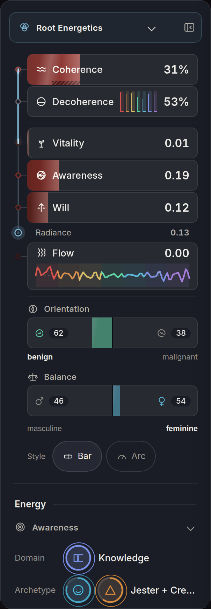

<!doctype html>
<html lang="en"><head><meta charset="utf-8"><meta name="viewport" content="width=device-width,initial-scale=1">
<title>Aura 1, Prism, two axes</title>
<style>:root{--bg:#0C0D12;--panel:#14161D;--sunk:#090A0E;--ink:#EFEDE8;--mid:#B4B0A8;--dim:#94908A;
 --line:rgba(239,237,232,.09);--line2:rgba(239,237,232,.2);--acc:#7EB8D4;--lead:#7EB8D4;--mc1:#7EB8D4;--mc2:#7EB8D4}
*{box-sizing:border-box}
html,body{margin:0;height:100%}
body{background:var(--bg);color:var(--ink);font:15px/1.45 Inter,'Inter Tight',system-ui,-apple-system,'Segoe UI',sans-serif;
 -webkit-font-smoothing:antialiased;overflow:hidden}
button{font:inherit;color:inherit}
.app{display:grid;grid-template-columns:306px minmax(0,1fr) 330px;grid-template-rows:auto minmax(0,1fr);height:100vh}
.app.norail{grid-template-columns:minmax(0,1fr) 330px}
.app.norail .stage{grid-column:1}.app.norail .rail{grid-column:2}
.hd{grid-column:1/-1;display:flex;gap:24px;align-items:flex-start;justify-content:space-between;
 padding:16px 24px 12px;border-bottom:1px solid var(--line)}
.hd .ey{font-size:12px;color:var(--dim)}
.hd h1{margin:2px 0 4px;font-size:21px;font-weight:600;letter-spacing:-.01em}
.hd p{margin:0;max-width:820px;color:var(--mid);font-size:13.5px}
.nav{display:flex;gap:8px;flex-shrink:0;flex-wrap:wrap;justify-content:flex-end}
.nav a{display:inline-flex;align-items:center;min-height:44px;padding:0 14px;border:1px solid var(--line);border-radius:22px;
 color:var(--mid);text-decoration:none;font-size:13px}
.nav a:hover,.nav a[aria-current]{color:var(--ink);border-color:var(--line2)}
.stage{position:relative;overflow:hidden;background:radial-gradient(ellipse at 50% 44%,#13151C 0%,#0C0D12 62%,#090A0E 100%)}
.stk{position:absolute;inset:0;overflow:hidden}
.opaque .stk:after{content:"";position:absolute;inset:0;background:radial-gradient(ellipse at 50% 46%,rgba(9,10,14,0) 38%,rgba(9,10,14,.8) 100%);pointer-events:none;z-index:1}
.opaque .mrow,.opaque .tbtn,.opaque .badge,.opaque .cap{z-index:3}
.stage canvas.cv{position:absolute;inset:0;width:100%;height:100%;display:block;touch-action:manipulation}
.stage canvas.cv.hit{cursor:pointer}
/* the mask icons, upper left of the page, full colour. each is a button because each becomes a protocol */
.mrow{position:absolute;left:20px;top:18px;display:flex;gap:12px;z-index:3}
.mb{position:relative;width:60px;height:60px;border-radius:50%;border:0;background:rgba(14,16,22,.55);cursor:pointer;padding:0;
 transition:transform .25s,box-shadow .25s,filter .25s;box-shadow:0 0 0 0 transparent;filter:saturate(1.05)}
.mb svg.bt{position:absolute;inset:0;width:60px;height:60px;overflow:visible}
.mb:hover{transform:translateY(-1px);box-shadow:0 0 18px -4px var(--mc2)}
.mb[aria-pressed="true"]{box-shadow:0 0 0 1px var(--mc1),0 0 calc(20px + 20px*var(--pu,.5)) -2px var(--mc2),0 0 62px -14px var(--mc1)}
.mb:focus-visible{outline:2px solid var(--ink);outline-offset:4px}
.mb[aria-pressed="true"]{transform:scale(1.08);box-shadow:0 0 0 1px var(--mc1),0 0 30px -2px var(--mc2),0 0 62px -14px var(--mc1);filter:saturate(1.25) brightness(1.12)}
.mb[aria-pressed="true"] .wash{fill-opacity:1}
.mb .tip{position:absolute;top:calc(100% + 12px);left:0;width:max-content;max-width:220px;padding:8px 12px;border-radius:10px;background:rgba(14,16,22,.95);border:1px solid var(--line2);
 color:var(--mid);font-size:12.5px;line-height:1.35;text-align:left;opacity:0;pointer-events:none;transition:opacity .18s;z-index:6;transform:none;filter:none}
.mb .tip b{display:block;color:var(--ink);font-weight:600;font-size:13px;margin-bottom:1px}
.mb:hover .tip,.mb:focus-visible .tip,.mb.showtip .tip{opacity:1}
.badge{position:absolute;left:20px;bottom:20px;z-index:3;display:flex;align-items:center;gap:10px;padding:8px 14px 8px 10px;border-radius:26px;
 background:rgba(14,16,22,.6);border:1px solid var(--line2);backdrop-filter:blur(8px);-webkit-backdrop-filter:blur(8px);min-height:48px}
.badge>svg{width:30px;height:30px;flex:none}
.badge .bt{display:flex;flex-direction:column;line-height:1.15}
.badge .bt b{font-size:14px;font-weight:600;color:var(--ink)}
.badge .bt i{font-style:normal;font-size:12px;color:var(--lead)}
.badge .ticks{display:flex;gap:3px;align-items:flex-end;margin-left:6px}
.badge .ticks u{width:3px;height:14px;border-radius:2px;background:rgba(239,237,232,.14);display:block}
.badge .ticks u.on{background:var(--tc)}
.cap{position:absolute;left:226px;right:340px;bottom:24px;text-align:center;font-size:13px;color:var(--mid);pointer-events:none;z-index:2;padding:0 16px}
.cap b{color:var(--ink);font-weight:500}
.cap .cap2{display:block;margin-top:3px;color:var(--dim);font-size:12px}
.tbtn{position:absolute;top:16px;right:16px;z-index:4;display:inline-flex;align-items:center;gap:8px;min-height:44px;padding:0 16px 0 12px;border-radius:22px;
 border:1px solid var(--line2);background:rgba(20,22,29,.62);backdrop-filter:blur(8px);-webkit-backdrop-filter:blur(8px);color:var(--mid);cursor:pointer;font-size:13px}
.tbtn svg{width:22px;height:22px}
.tbtn:hover{color:var(--ink);border-color:rgba(239,237,232,.4)}
.tbtn[aria-pressed="true"]{color:var(--ink);border-color:var(--lead);box-shadow:0 0 0 1px var(--lead)}
.tbtn:focus-visible{outline:2px solid var(--acc);outline-offset:3px}
.hint{position:absolute;top:24px;left:24px;z-index:2;font-size:12.5px;color:var(--dim);max-width:260px;pointer-events:none}
.hover{position:absolute;z-index:5;pointer-events:none;padding:6px 10px;border-radius:8px;background:rgba(14,16,22,.92);border:1px solid var(--line2);font-size:12.5px;color:var(--mid);opacity:0;transition:opacity .12s;white-space:nowrap}
.hover b{color:var(--ink);font-weight:600}
/* the trace card */
.trace{position:absolute;z-index:4;right:28px;top:50%;width:348px;transform:translateY(-50%);padding:18px 18px 16px;border-radius:16px;
 background:rgba(18,20,27,.9);border:1px solid var(--line2);backdrop-filter:blur(10px);-webkit-backdrop-filter:blur(10px);
 opacity:0;pointer-events:none;transition:opacity .3s,transform .3s;transform:translateY(-46%)}
.tracing .trace{opacity:1;pointer-events:auto;transform:translateY(-50%)}
.trace h2{margin:0 0 2px;font-size:12px;font-weight:500;color:var(--dim);display:flex;align-items:center;gap:8px}
.trace h2 svg{width:16px;height:16px}
.trace .ttl{display:flex;align-items:center;gap:10px;margin:6px 0 12px}
.trace .ttl svg{width:28px;height:28px;flex:none}
.trace .ttl b{font-size:20px;font-weight:600;letter-spacing:-.01em;color:var(--tc)}
.trace .ttl span{margin-left:auto;font-size:12.5px;color:var(--mid)}
.step{position:relative;padding:0 0 0 20px;margin:0}
.step+.step{margin-top:12px}
.step:before{content:"";position:absolute;left:3px;top:5px;width:9px;height:9px;border-radius:50%;border:1.5px solid var(--tc)}
.step:after{content:"";position:absolute;left:7.5px;top:17px;bottom:-14px;border-left:1.5px dotted rgba(239,237,232,.3)}
.step:last-of-type:after{display:none}
.step .k{display:flex;gap:8px;align-items:baseline;font-size:12px;color:var(--dim)}
.step .k i{font-style:normal;margin-left:auto;padding:1px 8px;border-radius:10px;border:1px solid var(--line2);color:var(--mid);font-size:11.5px}
.step .q{margin:2px 0 0;color:var(--ink);font-size:14px;line-height:1.4}
.step .m{margin:2px 0 0;color:var(--mid);font-size:13px}
.edge{margin:10px 0 0 20px;font-size:12px;color:var(--dim)}
.edge+.step{margin-top:6px}
.trace .why{margin:14px 0 0;padding-top:12px;border-top:1px solid var(--line);font-size:12.5px;color:var(--mid)}
.trace .acts{display:flex;gap:8px;margin-top:12px}
.trace .acts button{min-height:44px;padding:0 16px;border-radius:22px;border:1px solid var(--line2);background:transparent;cursor:pointer;color:var(--mid);font-size:13px}
.trace .acts button:hover{color:var(--ink);border-color:rgba(239,237,232,.4)}
.trace .acts button:focus-visible{outline:2px solid var(--acc);outline-offset:2px}
/* the rail */
.rail{background:var(--panel);border-left:1px solid var(--line);overflow:auto;padding:20px 20px 28px}
.lab{font-size:12px;color:var(--dim);margin-bottom:6px}
.read{padding-bottom:16px;border-bottom:1px solid var(--line)}
.lead{display:flex;align-items:center;gap:12px}
.lead svg{width:40px;height:40px;flex-shrink:0}
.lead b{font-size:28px;font-weight:600;letter-spacing:-.01em;color:var(--lead)}
.lead .fig{margin-left:auto;font-size:20px;font-variant-numeric:tabular-nums}
.where{color:var(--mid);font-size:13px;margin:2px 0 14px 52px}
.blk{margin-top:12px}
.val{font-size:17px;font-weight:500}
.sub{color:var(--mid);font-size:13px;margin-top:2px}
.sec{padding:16px 0;border-bottom:1px solid var(--line)}
.sec:last-child{border-bottom:0}
.chips{display:flex;flex-wrap:wrap;gap:8px}
.chip{min-height:44px;padding:0 14px;border-radius:22px;border:1px solid var(--line);background:transparent;color:var(--mid);cursor:pointer;
 font-size:13px;display:inline-flex;align-items:center;gap:8px}
.chip:hover{color:var(--ink);border-color:var(--line2)}
.chip[aria-pressed="true"]{color:var(--ink);border-color:var(--c,var(--acc));box-shadow:inset 0 0 0 1px var(--c,var(--acc))}
.chip i{width:8px;height:8px;border-radius:50%;border:1.5px solid var(--c,var(--acc))}
.leg{display:flex;flex-direction:column;gap:0}
.lg{display:grid;grid-template-columns:24px 98px minmax(0,1fr) 30px;align-items:center;gap:10px;min-height:44px;border-radius:8px;padding:0 6px;margin:0 -6px;
 cursor:pointer;background:none;border:0;text-align:left;width:calc(100% + 12px)}
.lg:hover{background:rgba(239,237,232,.04)}
.lg:focus-visible{outline:2px solid var(--acc);outline-offset:-2px}
.lg svg{width:20px;height:20px}
.lg .n{font-size:13px;color:var(--mid)}
.lg.on .n{color:var(--ink);font-weight:500}
.lg .tr{position:relative;height:4px;border-radius:2px;background:rgba(239,237,232,.07)}
.lg .tr i{position:absolute;left:0;top:0;bottom:0;border-radius:2px}
.lg .f{font-size:13px;text-align:right;font-variant-numeric:tabular-nums;color:var(--mid)}
.note{color:var(--dim);font-size:12px;margin:10px 0 0}
/* the left menu strip, drawn here only to show the shared colour and rhythm. nothing connects it to the page. */
.stage{grid-column:2;grid-row:2}
.lrail{grid-column:1;grid-row:2}
.rail{grid-column:3;grid-row:2}
/* the left menu: a picture of the built app's own rail, set beside the page. nothing is drawn on it or across to the page. */
.lrail{background:var(--bg);overflow:hidden;padding:0}
.lrail img{display:block;width:100%;height:auto}
/* the coherence readout: the one number that lights the figure, with the seven seats under it going on as it rises */
.cm{position:absolute;right:20px;bottom:20px;z-index:3;display:flex;align-items:center;gap:10px;padding:8px 14px 8px 12px;border-radius:26px;
 background:rgba(14,16,22,.6);border:1px solid var(--line2);backdrop-filter:blur(8px);-webkit-backdrop-filter:blur(8px);min-height:48px;color:var(--mid)}
.cm>svg{width:26px;height:26px;flex:none}
.cm .ct{display:flex;flex-direction:column;line-height:1.15}.cm .ct b{font-size:14px;font-weight:600;color:var(--ink);white-space:nowrap}.cm .ct i{font-style:normal;font-size:12px;color:var(--mid)}
.cm .seats{display:flex;gap:4px;align-items:center;margin-left:4px}
.cm .seats u{display:block;width:10px;height:10px;border-radius:50%;border:2px solid var(--sc);opacity:.3}
.range{display:flex;align-items:center;gap:12px;margin-top:12px}
.range input{flex:1;accent-color:var(--lead);min-height:44px}
.range output{min-width:44px;text-align:right;font-variant-numeric:tabular-nums;color:var(--ink);font-size:14px}
@media (max-width:1380px){.app{grid-template-columns:240px minmax(0,1fr) 300px}.app.norail{grid-template-columns:minmax(0,1fr) 300px}}
@media (max-width:860px){
 .app.norail{grid-template-columns:1fr}.app.norail .stage,.app.norail .rail{grid-column:1}
 .stage,.lrail,.rail{grid-column:1;grid-row:auto}
 body{overflow:auto}
 .app{grid-template-columns:1fr;grid-template-rows:auto auto auto;height:auto}
 .hd{flex-direction:row;align-items:center;justify-content:space-between;padding:8px 16px}
 .hd h1{font-size:17px;margin:0}
 .hd p,.hd .ey{display:none}
 .nav .opt{display:none}
 .nav a{min-height:44px;padding:0 12px;font-size:12.5px}
 .stage{overflow:visible;padding-bottom:12px}
 .stk{position:relative;inset:auto;height:calc(100vw*1.3);overflow:hidden}
 .tracing .stk{height:calc(100vw*1.0)}
 .mrow{left:14px;top:12px;gap:8px}
 .mb{width:52px;height:52px}.mb svg.bt{width:52px;height:52px}
 .mb .tip{max-width:200px}
 .tbtn{top:auto;bottom:14px;right:14px}
 .badge{left:14px;bottom:14px;padding:6px 12px 6px 8px;min-height:44px}
 .badge .ticks{display:none}
 .cap{left:0;right:0;bottom:122px;padding:0 14px}
 .cap .cap2{display:none}
 .tracing .cap{display:none}
 .trace{position:relative;right:auto;top:auto;width:auto;margin:0 12px;transform:none;opacity:0;display:none;border-radius:14px;padding:14px 14px 12px}
 .tracing .trace{display:block;opacity:1;transform:none}
 .lrail{display:none}
 .cm{right:auto;left:50%;transform:translateX(-50%);bottom:68px;padding:6px 12px 6px 10px;min-height:44px}
 .cm .seats{display:none}
 .tracing .cm{display:none}
 .rail{border-left:0;border-top:1px solid var(--line);padding:16px}
}
@media (prefers-reduced-motion:reduce){*{transition:none!important}}
</style></head><body>
<div class="app" id="app"></div>
<script>
"use strict";
/* Character, round OR mockups. Three Aura treatments, one person, five masks.
   Carried over from the round ON to OQ core: the nine axes, the seat palette, the figure and the
   pose maths. New in this file: Adult, the shear key, the seat spectrum and the coherence helpers.
   Two axes, kept apart on purpose. LOAD (the weights) bends the shape. COHERENCE lights it.
   The tables below are copied out of the shipping canon (atuned_src/engine/data/canon.js)
   on the day the mockups were made: the seat palette, the nine axes with their ring icons
   and the masks a reading is taken on. Nothing here reads a profile. The two example
   profiles are toy numbers. The page is one calm human figure that every mask bends into
   its own symbol, by how heavy the load is, and every pattern bends differently. Zero load
   is the plain person. There is no ring round anything: the nine pattern colours live in
   the marks themselves. */
const PAL={Root:'#D6524C',Sacral:'#D8924E',Solar:'#DABF6A',Heart:'#5FD5A6',Throat:'#5EBBDB','3rd Eye':'#7D93E0',Crown:'#A77EDB'};
const AX=[
 {nm:'Fear',seat:'Root',ic:'M12 3l8 14H4z',loc:'lower back, gut',addr:'Lumbar plexus'},
 {nm:'Anger',seat:'Solar',ic:'M13 2L4 14h6l-1 8 9-12h-6z',loc:'upper abdomen',addr:'Celiac plexus'},
 {nm:'Shame',seat:'Sacral',ic:'M5 20V9a7 7 0 0114 0v11M9 20v-6h6v6',loc:'pelvic floor',addr:'Pudendal plexus'},
 {nm:'Disgust',seat:'Sacral',ic:'M4 8c4 4 12 4 16 0M6 16c3-3 9-3 12 0',loc:'lower abdomen, skin',addr:'Sacral and dermis'},
 {nm:'Apathy',seat:'Throat',ic:'M4 12h16M4 7h16M4 17h16',loc:'base of neck',addr:'Shoulder girdle and throat'},
 {nm:'Shock',seat:'3rd Eye',ic:'M12 12m-9 0a9 9 0 1018 0 9 9 0 10-18 0M12 12m-4.5 0a4.5 4.5 0 109 0 4.5 4.5 0 10-9 0',loc:'forehead, skin',addr:'Prefrontal and dermis'},
 {nm:'Sad',seat:'Heart',ic:'M12 20s-8-5-8-11a4 4 0 018-2 4 4 0 018 2c0 6-8 11-8 11z',loc:'centre chest',addr:'Cardiac plexus'},
 {nm:'Surprise',seat:'Heart',ic:'M12 3v18M7 7c-3 2-3 9 0 11M17 7c3 2 3 9 0 11',loc:'upper torso',addr:'Upper chest and back'},
 {nm:'Anticipation',seat:'Solar',ic:'M12 4v11M8 11l4 4 4-4M6 20h12',loc:'lower sternum',addr:'Below the heart'}];
/* the five masks, in the canon's own order with Professional left out (round OO withdrew it,
   round OR keeps Adult). No mask is tied to a row of the left menu: round OR, "don't link the
   masks to Vitality and Awareness and stuff like that". */
const MASKS=[
 {nm:'Child',b:['Root','Sacral'],v:'gets small so somebody else decides',per:2.6},
 {nm:'Preteen',b:['Solar','Throat'],v:'checks the room before it says the thing',per:3.3},
 {nm:'Teen',b:['Throat'],v:'pushes back on the person, not the problem',per:1.8},
 {nm:'Adult',b:['Sacral','Solar'],v:'handles it, and files what it cost',per:4.2},
 {nm:'Ideological',b:['3rd Eye'],v:'answers from the position instead of the moment',per:7.2}];
const PROFILES={
 anger:{key:'anger',label:'Anger leads',
  w:{Fear:2.5,Anger:7.8,Shame:5.5,Disgust:4,Apathy:5.2,Shock:1.2,Sad:1.6,Surprise:1.4,Anticipation:2.2}},
 apathy:{key:'apathy',label:'Apathy leads',
  w:{Fear:1,Anger:1.8,Shame:4.6,Disgust:1.5,Apathy:6.4,Shock:1.2,Sad:3,Surprise:.8,Anticipation:2}}};
/* what the leading pattern is doing, in a word, for the badge */
const VERB=['tightening','rising','sinking','recoiling','flat','bursting','falling','widening','leaning'];
/* invented but plausible trace lines. A story supports a pattern, it never causes it. */
const TRACES={
 anger:{
  Anger:{date:'14 Sep',q:'He rewrote my section and sent it on without asking. I said fine. Jaw tight for an hour.',prov:'inferred',rel:2,last:'22 Sep'},
  Shame:{date:'2 Sep',q:'They asked about the missed deadline. I said it was handled. It was not handled.',prov:'inferred',rel:1,last:'9 Sep'},
  Apathy:{date:'29 Aug',q:'Closed the laptop. Watched the wall for forty minutes. Shoulders did not drop.',prov:'inferred',rel:0,last:''},
  Disgust:{date:'21 Aug',q:'Smiled through the whole dinner. Felt it in the skin of my forearms.',prov:'proposed',rel:0,last:''}},
 apathy:{
  Apathy:{date:'30 Sep',q:'Sat in the car outside the house for twenty minutes. Did not go in.',prov:'inferred',rel:3,last:'27 Sep'},
  Shame:{date:'22 Sep',q:'They asked what I wanted. I said I did not mind. I did mind.',prov:'inferred',rel:1,last:'25 Sep'},
  Sad:{date:'11 Sep',q:'The song came on in the shop. Chest went flat. Paid and left.',prov:'inferred',rel:0,last:''},
  Anticipation:{date:'4 Sep',q:'Lay awake rehearsing the call. Stomach held until it was over.',prov:'proposed',rel:0,last:''}}};

/* ---------- helpers ---------- */
const $=id=>document.getElementById(id);
const clamp=(v,a,b)=>Math.max(a,Math.min(b,v));
const lerp=(a,b,k)=>a+(b-a)*k;
const sstep=(a,b,v)=>{const t=clamp((v-a)/(b-a),0,1);return t*t*(3-2*t);};
const hx=c=>{const n=parseInt(c.slice(1),16);return[n>>16&255,n>>8&255,n&255];};
const mixc=(a,b,k)=>[a[0]+(b[0]-a[0])*k,a[1]+(b[1]-a[1])*k,a[2]+(b[2]-a[2])*k];
const INK=[239,237,232];
const cap1=s=>s.charAt(0).toUpperCase()+s.slice(1);
function rng(s){return function(){s|=0;s=s+0x6D2B79F5|0;let t=Math.imul(s^s>>>15,1|s);t=t+Math.imul(t^t>>>7,61|t)^t;return((t^t>>>14)>>>0)/4294967296;};}
/* a stable hash of an integer and a salt, 0 to 1 */
function hash(i,k){let h=(i*374761393+(k||0)*668265263)|0;h=(h^(h>>>13))*1274126177|0;h^=h>>>16;return (h>>>0)/4294967296;}
function hsl2rgb(h,s,l){h=((h%360)+360)%360/360;const q=l<.5?l*(1+s):l+s-l*s,p=2*l-q;
 const f=t=>{t=(t+1)%1;return t<1/6?p+(q-p)*6*t:t<.5?q:t<2/3?p+(q-p)*(2/3-t)*6:p;};return[f(h+1/3)*255,f(h)*255,f(h-1/3)*255];}
function rgb2hsl(c){const r=c[0]/255,g=c[1]/255,b=c[2]/255,mx=Math.max(r,g,b),mn=Math.min(r,g,b);let h=0,s=0;const l=(mx+mn)/2;
 if(mx!==mn){const d=mx-mn;s=l>.5?d/(2-mx-mn):d/(mx+mn);h=mx===r?(g-b)/d+(g<b?6:0):mx===g?(b-r)/d+2:(r-g)/d+4;h*=60;}return[h,s,l];}
const css=(c,a)=>'rgba('+(c[0]|0)+','+(c[1]|0)+','+(c[2]|0)+','+(a===undefined?1:a)+')';
const hex=c=>'#'+c.map(v=>('0'+Math.round(v).toString(16)).slice(-2)).join('');

/* ---------- the nine pattern colours ----------
   Seven seats, nine patterns: Sacral, Solar and Heart each carry two. The seven seat colours are the
   canon's own. The second pattern in a seat takes a sibling of its seat colour, searched (src/pcol2.js)
   so that no two of the nine sit closer than 22 in CIELAB and each stays as near its seat as that
   allows: Disgust is the darker earth of Sacral, Anticipation the paler sand of Solar, Surprise the
   cooler aqua of Heart. */
const SIBLING={Disgust:'#AD613B',Anticipation:'#DAC99D',Surprise:'#74D5CB'};
const PCOL=AX.map(a=>hx(SIBLING[a.nm]||PAL[a.seat]));
/* the seats run down the body where the body map seats them, crown at the head, root at the
   pelvis. A pair of patterns in one seat takes the body's left and its right. Legs carry Root. */
const SEATY={Crown:-1.0,'3rd Eye':-.9,Throat:-.72,Heart:-.5,Solar:-.3,Sacral:-.12,Root:.06};
const PFIELD=AX.map(a=>{const pair=AX.filter(b=>b.seat===a.seat),idx=pair.indexOf(a);
 return{y:SEATY[a.seat],x:pair.length>1?(idx?.17:-.17):0,sx:pair.length>1?.26:.6,sy:.12};});
function affs(x,y){const out=PFIELD.map(f=>Math.exp(-Math.pow((x-f.x)/f.sx,2)-Math.pow((y-f.y)/f.sy,2)));
 /* below the pelvis everything is Root: the legs hold the ground */
 if(y>.06){const r=Math.min(1,(y-.06)/.2);out[0]=Math.max(out[0],r*1.1);}
 return out;}
function leadPat(w){let b=0;AX.forEach((a,i)=>{if(w[a.nm]>w[AX[b].nm])b=i;});return b;}
function maskLoad(m,w){return m.b.reduce((s,seat)=>s+AX.filter(a=>a.seat===seat).reduce((x,a)=>Math.max(x,w[a.nm]),0),0)/m.b.length;}
function leadMask(w){let b=null;MASKS.forEach(m=>{const s=maskLoad(m,w);if(!b||s>b.s+1e-9)b={m,s};});return b.m;}
function maskTop(m,w){let b=-1;AX.forEach((a,i)=>{if(m.b.indexOf(a.seat)<0)return;if(b<0||w[a.nm]>w[AX[b].nm])b=i;});return b;}
function maskCols(m){const a=m.b.map(s=>PAL[s]);return[a[0],a[a.length-1]];}

/* ---------- the person ----------
   One base figure and a pose vector. The vector is the whole feasibility story: nine
   pattern weights each push the vector along their own direction, the mask pulls it toward
   its own symbol by how loaded the mask is, and at zero load every term is zero and the
   vector is REST, a plain calm person. The cost is nine multiply-adds per pose key, then
   one forward kinematics pass of about twenty segments. */
const REST={scale:1,ox:0,oy:0,lean:.012,curl:0,shL:0,shR:0,roll:0,shW:1,headDrop:0,headTurn:0,headTilt:.02,
 a1L:.13,a2L:.09,a1R:.15,a2R:.1,b1L:.05,b2L:.03,b1R:.045,b2R:.02,legShort:0,hipSep:1,neckExt:0,rigid:0,shear:0};
const KEYS=Object.keys(REST);
/* each mask's own symbol, as a pose. Child folds and shrinks, Preteen turns and checks,
   Teen thrusts, Ideological goes rigid and tall. */
const MASKPOSE={
 Child:{scale:.64,curl:.95,roll:.6,shW:.92,headDrop:.9,headTilt:.0,lean:0,a1L:.22,a2L:-2.05,a1R:.22,a2R:-2.05,b1L:.1,b2L:-.06,b1R:.1,b2R:-.06,legShort:.34,hipSep:.82},
 Preteen:{lean:.07,shL:.1,shR:-.35,headTurn:1,headTilt:.22,headDrop:.12,roll:.2,a1L:.3,a2L:.15,a1R:1,a2R:-2.5,b1L:-.03,hipSep:.95},
 Teen:{lean:-.17,shW:1.16,shL:.1,headDrop:-.55,headTilt:-.12,a1L:1.5,a2L:1.52,a1R:.75,a2R:.3,b1L:.2,b2L:.1,b1R:.14,b2R:-.08,hipSep:1.15,legShort:.08},
 /* Adult: upright and squared, the upper half shifted off the lower at the waist so the join shows,
    one forearm across the belly on the file */
 Adult:{lean:.03,shW:1.1,shear:.3,headDrop:.22,headTilt:.03,roll:-.1,shL:.05,shR:-.05,a1L:.14,a2L:.08,a1R:.42,a2R:-1.5,b1L:.04,b1R:.04,hipSep:1.0},
 Ideological:{lean:0,curl:-.4,shW:1.2,roll:-.4,shL:.25,shR:.25,headDrop:-.4,headTilt:0,neckExt:.05,a1L:.0,a2L:.0,a1R:.0,a2R:.0,b1L:0,b2L:0,b1R:0,b2R:0,hipSep:.7,rigid:1}};
/* what each pattern does to a body, as a push on the same vector */
const PATD=[
 /* Fear */ {roll:.35,shL:.5,shR:.5,headDrop:.3,scale:-.05,a1L:-.08,a1R:-.08,legShort:.05},
 /* Anger */ {shW:.16,shL:.7,shR:.7,headDrop:-.6,a1L:.25,a1R:.25,a2L:.2,a2R:.2,lean:-.03},
 /* Shame */ {curl:.4,headDrop:.8,roll:.35,shL:.2,shR:.2,scale:-.04},
 /* Disgust */ {lean:.07,headTurn:-.8,a1R:.6,a2R:-.7,headTilt:-.12},
 /* Apathy */ {curl:.2,shL:-.7,shR:-.7,headDrop:.45,headTilt:.1,a1L:-.06,a2L:-.08,a1R:-.06,a2R:-.08,legShort:.02},
 /* Shock */ {a1L:1,a1R:1,a2L:.9,a2R:.9,b1L:.1,b1R:.1,headDrop:-.5,hipSep:.15},
 /* Sad */ {headDrop:.9,curl:.3,shL:-.4,shR:-.4},
 /* Surprise */ {a1L:.6,a1R:.6,headDrop:-.7,shL:.3,shR:.3},
 /* Anticipation */ {lean:-.07,a1L:.2,a1R:.2,b1L:-.04,b1R:.07,headDrop:-.15}];
/* weights to a target pose. w is the nine weights already scaled by the load. */
function mixPose(maskNm,w,opt){opt=opt||{};
 const M=MASKS.find(x=>x.nm===maskNm);const ws=AX.map(a=>w[a.nm]);
 const mxw=Math.max.apply(null,ws),L=clamp(mxw/9,0,1);
 const m=clamp(maskLoad(M,w)/6.5,0,1);
 let ss=0;ws.forEach(v=>ss+=v*v);
 const p={};KEYS.forEach(k=>{p[k]=REST[k];});
 const T=MASKPOSE[maskNm];
 if(!opt.noMask)for(const k in T)p[k]+=m*(T[k]-REST[k]);
 if(ss>0)ws.forEach((v,i)=>{const sh=v*v/ss*L*1.7;if(sh<=0)return;const d=PATD[i];for(const k in d)p[k]+=sh*d[k];});
 return {p,m,L};}

/* the forward kinematics. figure units: y down, head top about -0.99, feet about 0.97 */
function buildFig(p){
 const sl=p.lean,u=[Math.sin(sl),-Math.cos(sl)],v=[Math.cos(sl),Math.sin(sl)];
 const P=[0,0],Ls=.64*(1-.32*p.curl);
 const SHV=[v[0]*p.shear,v[1]*p.shear];   /* the upper half slides off the lower one at the waist */
 const nb=[P[0]+u[0]*Ls+SHV[0],P[1]+u[1]*Ls+SHV[1]];
 const S0=[nb[0]-u[0]*.04,nb[1]-u[1]*.04+p.curl*.02];
 const nl=.07+p.neckExt-.04*p.curl;
 const nt=[nb[0]+u[0]*nl,nb[1]+u[1]*nl];
 const th=p.headTilt+sl;
 const Hc=[nt[0]+Math.sin(th)*.12+p.headTurn*.06,nt[1]-Math.cos(th)*.12+p.headDrop*.095];
 const hw=.205*p.shW*(1-.4*p.roll);
 const SL=[S0[0]-v[0]*hw,S0[1]-v[1]*hw-p.shL*.085],SR=[S0[0]+v[0]*hw,S0[1]+v[1]*hw-p.shR*.085];
 const arm=(S,s,a1,a2)=>{const E=[S[0]+s*Math.sin(a1)*.27,S[1]+Math.cos(a1)*.27];const W=[E[0]+s*Math.sin(a2)*.25,E[1]+Math.cos(a2)*.25];return[E,W];};
 const [EL,WL]=arm(SL,-1,p.a1L,p.a2L),[ER,WR]=arm(SR,1,p.a1R,p.a2R);
 const HL=[P[0]-v[0]*.085*p.hipSep,P[1]-v[1]*.085*p.hipSep],HR=[P[0]+v[0]*.085*p.hipSep,P[1]+v[1]*.085*p.hipSep];
 const lt=.47*(1-.35*p.legShort),ls=.45*(1-.3*p.legShort);
 const leg=(H,s,b1,b2)=>{const K=[H[0]+s*Math.sin(b1)*lt,H[1]+Math.cos(b1)*lt];const A=[K[0]+s*Math.sin(b2)*ls,K[1]+Math.cos(b2)*ls];return[K,A];};
 const [KL,AL]=leg(HL,-1,p.b1L,p.b2L),[KR,AR]=leg(HR,1,p.b1R,p.b2R);
 const mid1=[P[0]+u[0]*Ls*.5+SHV[0]*.8,P[1]+u[1]*Ls*.5+SHV[1]*.8],mid2=[P[0]+u[0]*Ls*.16+SHV[0]*.3,P[1]+u[1]*Ls*.16+SHV[1]*.3];
 const hd=a=>{const L=Math.hypot(a[0]-S0[0],a[1]-S0[1])||1;return L;};
 const C=[];
 const cap=(a,b,ra,rb,id)=>C.push({ax:a[0],ay:a[1],bx:b[0],by:b[1],ra,rb,id});
 const disc=(c,rx,ry,rot,id)=>C.push({ax:c[0],ay:c[1],bx:c[0],by:c[1],ra:rx,rb:ry,rot:rot||0,disc:1,id});
 disc(Hc,.104,.126,th,'head');
 cap(nb,nt,.044,.039,'neck');
 cap(S0,mid1,.205*Math.min(1.1,p.shW)*(1-.1*p.roll),.165,'chest');
 cap(mid1,mid2,.165,.146,'belly');
 cap(mid2,P,.146,.158,'pelvis');
 cap(S0,SL,.075,.058,'shL');cap(S0,SR,.075,.058,'shR');
 cap(SL,EL,.056,.047,'uaL');cap(EL,WL,.047,.036,'faL');
 cap(SR,ER,.056,.047,'uaR');cap(ER,WR,.047,.036,'faR');
 const hl=[WL[0]+(WL[0]-EL[0])*.16,WL[1]+(WL[1]-EL[1])*.16],hr=[WR[0]+(WR[0]-ER[0])*.16,WR[1]+(WR[1]-ER[1])*.16];
 disc(hl,.038,.044,0,'hL');disc(hr,.038,.044,0,'hR');
 cap(HL,KL,.094,.066,'thL');cap(KL,AL,.064,.042,'shnL');
 cap(HR,KR,.094,.066,'thR');cap(KR,AR,.064,.042,'shnR');
 cap([AL[0]-.03,AL[1]+.018],[AL[0]-.07,AL[1]+.018],.03,.03,'ftL');cap([AR[0]+.03,AR[1]+.018],[AR[0]+.07,AR[1]+.018],.03,.03,'ftR');
 /* ground the figure, scale it about the feet, move it */
 const gy=.955-Math.max(AL[1],AR[1])-.02;
 const Qx=0,Qy=.955,s=p.scale;
 C.forEach(c=>{c.ax=Qx+(c.ax-Qx)*s+p.ox;c.ay=Qy+(c.ay+gy-Qy)*s+p.oy;c.bx=Qx+(c.bx-Qx)*s+p.ox;c.by=Qy+(c.by+gy-Qy)*s+p.oy;
  c.ra*=s;c.rb*=s;});
 const J=n=>[Qx+(n[0]-Qx)*s+p.ox,Qy+(n[1]+gy-Qy)*s+p.oy];
 return {caps:C,J:{m1:J(mid1),m2:J(mid2),nt:J(nt),head:J(Hc),SL:J(SL),SR:J(SR),EL:J(EL),ER:J(ER),WL:J(WL),WR:J(WR),P:J(P),S0:J(S0),KL:J(KL),KR:J(KR),AL:J(AL),AR:J(AR)},scale:s};}

/* signed distance to a capsule or disc, negative inside */
function capD(c,x,y){
 if(c.disc){const ca=Math.cos(c.rot),sa=Math.sin(c.rot),dx=x-c.ax,dy=y-c.ay;
  const lx=(dx*ca+dy*sa)/c.ra,ly=(-dx*sa+dy*ca)/c.rb;return (Math.hypot(lx,ly)-1)*Math.min(c.ra,c.rb);}
 const bx=c.bx-c.ax,by=c.by-c.ay,l2=bx*bx+by*by;let t=l2?((x-c.ax)*bx+(y-c.ay)*by)/l2:0;t=t<0?0:t>1?1:t;
 const px=c.ax+bx*t-x,py=c.ay+by*t-y;return Math.sqrt(px*px+py*py)-(c.ra+(c.rb-c.ra)*t);}
/* the smooth union of the whole figure. a box round each part is made once per figure, so a point
   far from any part costs a handful of comparisons and not twenty distance tests */
function figBoxes(F){if(F.bb)return F.bb;const pad=.05;let X0=9,X1=-9,Y0=9,Y1=-9;
 F.bb=F.caps.map(c=>{const r=Math.max(c.ra,c.rb)+pad,rr=c.disc?Math.max(c.ra,c.rb)+pad:r;
  const b=[Math.min(c.ax,c.bx)-rr,Math.max(c.ax,c.bx)+rr,Math.min(c.ay,c.by)-rr,Math.max(c.ay,c.by)+rr];
  X0=Math.min(X0,b[0]);X1=Math.max(X1,b[1]);Y0=Math.min(Y0,b[2]);Y1=Math.max(Y1,b[3]);return b;});
 F.box=[X0,X1,Y0,Y1];return F.bb;}
function figD(F,x,y,k){k=k||.035;const bb=figBoxes(F),B=F.box;if(x<B[0]-.06||x>B[1]+.06||y<B[2]-.06||y>B[3]+.06)return .3;
 let d=9;const C=F.caps;
 for(let i=0;i<C.length;i++){const b=bb[i];if(x<b[0]||x>b[1]||y<b[2]||y>b[3])continue;
  const e=capD(C[i],x,y);const h=Math.max(k-Math.abs(d-e),0)/k;d=Math.min(d,e)-h*h*k*.25;}
 return d>8?.3:d;}

/* distance fields, and the pattern shares the symbols bend by */
function sdEll(x,y,cx,cy,rx,ry){const dx=(x-cx)/rx,dy=(y-cy)/ry;return (Math.hypot(dx,dy)-1)*Math.min(rx,ry);}
function sdBox(x,y,cx,cy,hx,hy){const dx=Math.abs(x-cx)-hx,dy=Math.abs(y-cy)-hy;return Math.min(Math.max(dx,dy),0)+Math.hypot(Math.max(dx,0),Math.max(dy,0));}
function sdStar(x,y,cx,cy,n,ro,ri,rot){const dx=x-cx,dy=y-cy,r=Math.hypot(dx,dy),a=Math.atan2(dy,dx)-rot;const u=((a*n/(2*Math.PI))%1+1)%1;
 const tri=1-Math.abs(u*2-1);const R=ri+(ro-ri)*Math.pow(tri,1.15);return (r-R)*.62;}
/* a pattern share, from the eased charges: how much of the push each pattern owns */
function shares(sc){let s=0;const q=sc.pc.map(v=>{const w=v*v;s+=w;return w;});return q.map(v=>s?v/s:0);}

/* ---------- the seat spectrum ----------
   The seven seats run root, sacral, solar, heart, throat, third eye, crown, which is red, orange, yellow,
   green, cyan, blue, violet: a spectrum already, in the palette the product ships. Full spectrum light
   here is those seven colours and the blends between them and nothing else. s runs 0 (root) to 6 (crown). */
const SEATN=['Root','Sacral','Solar','Heart','Throat','3rd Eye','Crown'];
const SEATC=SEATN.map(n=>hx(PAL[n]));
function specAt(s){s=clamp(s,0,5.9999);const i=s|0;return mixc(SEATC[i],SEATC[i+1],s-i);}
/* where on the rest figure a seat sits. the legs carry Root, so the spectrum starts at the feet and
   has climbed to the sacral seat by the pelvis, and the upper body carries the other six where the body map seats them */
const SEATYS=[.96,-.12,-.3,-.5,-.72,-.9,-1.04];
function seatF(y){if(y>=SEATYS[0])return 0;for(let i=0;i<6;i++){if(y>=SEATYS[i+1]){return i+(SEATYS[i]-y)/(SEATYS[i]-SEATYS[i+1]);}}return 6;}
const EMBER=[150,158,174];   /* the colour of an unlit point: a cool grey, the same the pattern colours fade to at no charge */
/* how lit a thing at seat position k is, at coherence c. coherence fills the seats from root up: a seat is
   lit when the coherence has reached it. the front of the light is a gradient, not an edge. */
function litAt(k,c){const X=c*8.6-1.0;return Math.pow(sstep(-.7,.9,X-k),1.4);}
/* the words for a coherence, in the order the owner gave them: compressed is no light, full is full spectrum */
function cohWord(c){return c<.2?'Compressed. No light.':c<.8?'Partial. Some of the spectrum is lit.':'Coherent. Full spectrum.';}
const cohShort=c=>c<.2?'compressed':c<.8?'partial':'full spectrum';
/* a batch of points drawn in as few state changes as possible. A point is a place, a colour bin (hue) and a
   level (how bright). Points are counted into bins and drawn bin by bin, so a frame costs one fill style per
   bin and not one per point. COLS[h][l] is the css colour, ALPHA[l] the alpha, SIZE[l] the size multiplier. */
class Batch{
 constructor(nmax,nh,nl){this.n=0;this.nh=nh;this.nl=nl;this.x=new Float32Array(nmax);this.y=new Float32Array(nmax);this.b=new Uint16Array(nmax);this.s=new Float32Array(nmax);
  this.cnt=new Int32Array(nh*nl+1);this.ord=new Int32Array(nmax);}
 reset(){this.n=0;}
 add(x,y,h,l,sz){const i=this.n++;this.x[i]=x;this.y[i]=y;this.b[i]=h*this.nl+l;this.s[i]=sz;}
 flush(g,d,COLS,ALPHA,SIZE,base){const n=this.n,nb=this.nh*this.nl,cnt=this.cnt;cnt.fill(0);
  for(let i=0;i<n;i++)cnt[this.b[i]+1]++;
  for(let i=0;i<nb;i++)cnt[i+1]+=cnt[i];
  const pos=this.pos||(this.pos=new Int32Array(nb+1));for(let i=0;i<=nb;i++)pos[i]=cnt[i];
  const ord=this.ord;for(let i=0;i<n;i++)ord[pos[this.b[i]]++]=i;
  for(let b=0;b<nb;b++){const a=cnt[b],e=cnt[b+1];if(a===e)continue;const h=(b/this.nl)|0,l=b%this.nl;
   const al=ALPHA[l];if(al<.01)continue;g.globalAlpha=al>1?1:al;g.fillStyle=COLS[h][l];
   const sz=base*SIZE[l];
   for(let j=a;j<e;j++){const i=ord[j],s=sz*this.s[i];g.fillRect((this.x[i]-s/2)*d,(this.y[i]-s/2)*d,s*d,s*d);}}
  g.globalAlpha=1;}}

/* ---------- the scene: one canvas, one person, one system ----------
   Everything a system draws is a pure function of time, the eased pose and the eased charges,
   so a frame strip is the same on every run and a still frame can be asked for at any second. */
const REDUCED=matchMedia('(prefers-reduced-motion: reduce)').matches;
const Q=new URLSearchParams(location.search);
const MANUAL=Q.has('manual');              /* ?manual=1: no clock, the harness sets the time, for frame strips */
const sat=(a,b,v)=>clamp((v-a)/(b-a),0,1);
const saw=u=>u<.2?sstep(0,.2,u):1-sstep(.2,1,u);   /* a quick lunge and a slow return */
class Scene{
 constructor(host,sys,o){o=o||{};this.host=host;this.sys=sys;this.o=o;
  this.cv=document.createElement('canvas');this.cv.className='cv';host.insertBefore(this.cv,host.firstChild);this.g=this.cv.getContext('2d');
  this.dpr=Math.min(2,devicePixelRatio||1);this.t=0;this.small=o.small!==undefined?o.small:innerWidth<700;
  this.mask=o.mask||'Preteen';this.profKey=o.prof||'anger';this.carry=!!o.carry;this.kT=o.load!==undefined?o.load:1;
  /* coherence, 0 to 1. The light. It opens from nothing on arrival, so the page lights up as it lands. */
  this.cT=o.coh!==undefined?o.coh:1;this.c=Math.min(this.cT,.22);this.bc=null;
  this.sel=-1;this.hov=-1;this.ts=0;this.tsT=0;this.anchor=null;this.fade=.6;
  this.pc=new Array(9).fill(0);this.pv=Object.assign({},REST);this.m=0;this.L=0;
  this.hx=[];this.hy=[];this.hp=[];this.regN=0;this.sprites={};this.mem={};
  this.ready=false;this.lineup=!!o.lineup;this.W=0;this.H=0;
  this.setTarget();if(o.snap)this.snap();
  if(sys.init)sys.init(this);}
 get prof(){return PROFILES[this.profKey];}
 /* the weights this scene draws: the profile's own, scaled by the load */
 weights(){const w={};const p=this.prof.w;AX.forEach(a=>w[a.nm]=p[a.nm]*this.kT);
  /* carry: show the mask as if it were the one carrying the load, its own seats lifted to near the leader */
  if(this.carry){const M=MASKS.find(x=>x.nm===this.mask);let mx=0;AX.forEach(a=>mx=Math.max(mx,w[a.nm]));
   AX.forEach(a=>{if(M.b.indexOf(a.seat)>=0)w[a.nm]=Math.max(w[a.nm],.85*mx);});}
  return w;}
 setTarget(){const M=MASKS.find(x=>x.nm===this.mask);const w=this.weights();
  const r=mixPose(this.mask,w,this.sys.noMaskPose?{noMask:true}:{});this.tp=r.p;this.tm=r.m;this.tL=r.L;
  /* charges, seen through the mask: a seat the mask does not wear is held back to a third */
  this.tpc=AX.map(a=>Math.min(1,w[a.nm]/9)*(M.b.indexOf(a.seat)>=0?1:.34));
  this.lead=leadPat(w);this.per=M.per;this.col2=maskCols(M);}
 snap(){this.pv=Object.assign({},this.tp);this.m=this.tm;this.L=this.tL;this.pc=this.tpc.slice();this.fade=1;this.ready=true;this.c=this.cT;}
 set(o){if(o.coh!==undefined)this.cT=o.coh;if(o.carry!==undefined)this.carry=o.carry;if(o.mask!==undefined)this.mask=o.mask;if(o.prof!==undefined)this.profKey=o.prof;if(o.load!==undefined)this.kT=o.load;
  this.setTarget();if(this.sys.reset)this.sys.reset(this);}
 resize(){const r=this.host.getBoundingClientRect();const d=this.dpr,w=Math.round(r.width*d),h=Math.round(r.height*d);
  if(this.cv.width!==w||this.cv.height!==h){this.cv.width=w;this.cv.height=h;}this.W=w;this.H=h;this.w=r.width;this.h=r.height;this.mobile=r.width<700;}
 /* where the figure stands on the stage. the figure is two units tall, centre at its middle */
 layout(){const w=this.w,h=this.h;let cx,cy,k;
  if(this.lineup){k=(h-14)/2.1*(this.sys.lineK||1);return{cx:w/2,cy:h/2+(this.sys.lineY||0)*h,k};}
  if(!this.mobile){k=(h-120)/2.1;cx=w*(.5-.13*this.ts);cy=h*.5+4;}
  else{const top=80,bot=this.sel>=0?70:176;k=Math.min((h-top-bot)/2.1,w/2.9);cx=w/2;cy=top+(h-top-bot)/2;}
  return{cx,cy,k};}
 toFig(px,py){const L=this.Lo||this.layout();return[(px-L.cx)/L.k,(py-L.cy)/L.k];}
 ease(dt){const q=1-Math.exp(-dt*(this.ready?3.2:2.4));
  for(const k in this.tp)this.pv[k]+=(this.tp[k]-this.pv[k])*q;
  this.m+=(this.tm-this.m)*q;this.L+=(this.tL-this.L)*q;
  for(let i=0;i<9;i++)this.pc[i]+=(this.tpc[i]-this.pc[i])*q;
  this.fade=Math.min(1,this.fade+dt*1.5);
  /* the light comes up slower than the shape bends, and a beat later: the body gathers, then it is lit.
     going down is quicker than going up, a held breath is shorter than an exhale. */
  const lateT=Math.max(0,this.t-.25);const cq=1-Math.exp(-dt*(this.cT>this.c?1.5:2.2)*Math.min(1,lateT*3));
  this.c+=(this.cT-this.c)*cq;
  this.ts+=(this.tsT-this.ts)*(1-Math.exp(-dt*6));if(Math.abs(this.tsT-this.ts)<.002)this.ts=this.tsT;}
 update(dt){
  /* a person who asked the system for less motion gets the settled picture, held still */
  if(REDUCED){if(!this._r){this._r=1;this.snap();this.t=3.2;}return;}
  this.ease(dt);this.t+=dt;this.ready=true;}
 /* the idle motion each mask owns, at its own tempo. the person at rest only breathes. */
 posed(){const p=Object.assign({},this.pv),t=this.t,m=this.m,ph=this.ph=(t/this.per)%1,s=Math.sin(Math.PI*2*ph);
  const br=Math.sin(Math.PI*2*t/4.2);
  /* the plain person: a slow breath, a small sway */
  p.shL+=.025*br;p.shR+=.025*br;p.lean+=.006*Math.sin(Math.PI*2*t/9)*(1-m);p.headTilt+=.01*Math.sin(Math.PI*2*t/7.3)*(1-m);
  const a=Math.max(.2,m);
  if(this.sys.noMaskPose){/* this system draws the mask as a symbol, not as a posture */}
  else if(this.mask==='Child'){p.curl+=.05*s*a;p.headDrop+=.14*s*a;p.scale-=.01*s*a;}
  else if(this.mask==='Preteen'){p.headTurn+=.5*s*a;p.headTilt+=.05*s*a;p.shR+=.1*Math.sin(Math.PI*2*ph+1)*a;}
  else if(this.mask==='Teen'){const th=saw(ph);p.a1L+=.16*th*a;p.a2L+=.16*th*a;p.lean-=.035*th*a;p.shW+=.03*th*a;}
  else if(this.mask==='Adult'){/* steady. only the seam works: a slow tension, the halves leaning on each other */p.shear+=.03*s*a;p.headDrop+=.025*Math.sin(Math.PI*2*ph+1.2)*a;p.a1R+=.04*s*a;}
  else if(this.mask==='Ideological'){/* rigid: it does not move. the light moves across it. */}
  /* what the leading pattern adds, as small continuing motion */
  const l=this.lead,lw=this.pc[l];
  if(l===0)p.shL+=.012*Math.sin(t*31)*lw,p.shR+=.012*Math.sin(t*29)*lw;     /* Fear trembles */
  if(l===4)p.headDrop+=.01*Math.sin(t*.7)*lw;                                /* Apathy barely moves */
  if(l===1)p.shL+=.03*(.5+.5*Math.sin(Math.PI*2*t/2.2))*lw,p.shR+=.03*(.5+.5*Math.sin(Math.PI*2*t/2.2))*lw;
  return p;}
 /* the intro: every mark has its own late start so the page opens as a gathering */
 e(i,t0){const tt=this.t-(t0||0)-.04-hash(i,3)*.55;return sstep(0,1.15,tt);}
 /* the factor a pattern's marks take when one is selected or hovered */
 pa(p){if(this.sel>=0)return p===this.sel?1.18:(this.sys.dimTo||.26);if(this.hov>=0)return p===this.hov?1.12:.72;return 1;}
 /* brightness a pattern carries: charge, with a floor so a quiet one is still seen */
 bright(p){return .3+.7*Math.pow(Math.max(0,this.pc[p]),.8);}
 rgb(p,l){let c=PCOL[p];const q=this.pc[p];c=mixc([150,158,174],c,.5+.5*Math.min(1,q*1.15));return l?mixc(c,INK,l):c;}
 /* the colour of a place on the body, blended across the patterns that own it */
 rgbAt(x,y,l){const a=affs(x,y);let s=0,r=0,g=0,b=0;for(let i=0;i<9;i++){const w=a[i]*(.1+this.pc[i]);s+=w;const c=this.rgb(i,0);r+=c[0]*w;g+=c[1]*w;b+=c[2]*w;}
  const c=s?[r/s,g/s,b/s]:[150,158,174];return l?mixc(c,INK,l):c;}
 patAt(x,y){const a=affs(x,y);let b=0,bw=-1;for(let i=0;i<9;i++){const w=a[i]*(.1+this.pc[i]);if(w>bw){bw=w;b=i;}}return b;}
 /* mark registration, so a press finds the pattern that owns what it touched */
 reg(x,y,p){if((this.regN++&3)||this.hx.length>1800)return;this.hx.push(x);this.hy.push(y);this.hp.push(p);}
 near(px,py,max){let b=-1,bd=max*max;for(let i=0;i<this.hx.length;i++){const dx=this.hx[i]-px,dy=this.hy[i]-py,d=dx*dx+dy*dy;if(d<bd){bd=d;b=this.hp[i];}}return b;}
 originOf(p){let sx=0,sy=0,n=0;for(let i=0;i<this.hx.length;i++)if(this.hp[i]===p){sx+=this.hx[i];sy+=this.hy[i];n++;}
  if(!n)return null;sx/=n;sy/=n;let b=null,bd=1e18;for(let i=0;i<this.hx.length;i++)if(this.hp[i]===p){const d=(this.hx[i]-sx)**2+(this.hy[i]-sy)**2;if(d<bd){bd=d;b=[this.hx[i],this.hy[i]];}}return b;}
 /* a soft light, from a cached sprite */
 glow(x,y,r,rgb,a){const key=((rgb[0]/16)|0)+','+((rgb[1]/16)|0)+','+((rgb[2]/16)|0);let s=this.sprites[key];
  if(!s){s=document.createElement('canvas');s.width=s.height=64;const c=s.getContext('2d'),gr=c.createRadialGradient(32,32,0,32,32,32);
   const q=[(rgb[0]/16|0)*16+8,(rgb[1]/16|0)*16+8,(rgb[2]/16|0)*16+8];
   gr.addColorStop(0,css(q,1));gr.addColorStop(.35,css(q,.38));gr.addColorStop(1,css(q,0));c.fillStyle=gr;c.fillRect(0,0,64,64);this.sprites[key]=s;}
  const g=this.g,d=this.dpr;g.globalAlpha=clamp(a,0,1);g.drawImage(s,(x-r)*d,(y-r)*d,r*2*d,r*2*d);}
 dot(x,y,s,rgb,a){const g=this.g,d=this.dpr;g.globalAlpha=clamp(a,0,1);g.fillStyle='rgb('+(rgb[0]|0)+','+(rgb[1]|0)+','+(rgb[2]|0)+')';g.fillRect((x-s/2)*d,(y-s/2)*d,s*d,s*d);}
 render(){if(!this.W)this.resize();const g=this.g,d=this.dpr;
  g.setTransform(1,0,0,1,0,0);g.globalCompositeOperation='source-over';g.globalAlpha=1;g.clearRect(0,0,this.W,this.H);
  if(this.sys.bg){g.fillStyle=this.sys.bg;g.fillRect(0,0,this.W,this.H);}
  const L=this.Lo=this.layout();this.hx.length=0;this.hy.length=0;this.hp.length=0;this.regN=0;
  const P=this.posed();this.fig=buildFig(P);this.P=P;
  this.k=L.k;this.cx=L.cx;this.cy=L.cy;
  g.globalCompositeOperation='lighter';
  this.sys.draw(this);
  g.globalAlpha=1;
  /* the glow: the picture blurred twice and laid back over itself, so lit points bleed light into each other.
     it is made by halving the canvas four times and drawing the small copies back up, which is a blur that costs
     almost nothing, and the amount is set by the system from the coherence. */
  if(this.sys.bloom){const b=this.sys.bloom(this);if(b&&(b[0]>.004||b[1]>.004))this.bloom(b[0],b[1]);}
  if(this.sel>=0&&this.anchor)this.thread();
  g.globalCompositeOperation='source-over';g.globalAlpha=1;}
 bloom(a1,a2){const W=this.W,H=this.H,g=this.g;
  if(!this.bc||this.bc.W!==W||this.bc.H!==H){const mk=(w,h)=>{const c=document.createElement('canvas');c.width=Math.max(2,w|0);c.height=Math.max(2,h|0);
    const x=c.getContext('2d');x.imageSmoothingEnabled=true;x.imageSmoothingQuality='high';return{c,x,w:c.width,h:c.height};};
   this.bc={W,H,l:[mk(W/4,H/4),mk(W/16,H/16)]};}
  const L=this.bc.l;let src=this.cv;
  this.bf=(this.bf|0)+1;if(MANUAL||this.bf&1){for(let i=0;i<2;i++){const q=L[i];q.x.globalCompositeOperation="copy";q.x.drawImage(src,0,0,q.w,q.h);src=q.c;}}
  g.save();g.setTransform(1,0,0,1,0,0);g.globalCompositeOperation='lighter';g.imageSmoothingEnabled=true;g.imageSmoothingQuality='high';
  g.globalAlpha=Math.min(1,a1);g.drawImage(L[0].c,0,0,W,H);g.globalAlpha=Math.min(1,a2);g.drawImage(L[1].c,0,0,W,H);g.restore();}
 /* figure units to css px */
 X(x){return this.cx+x*this.k;}
 Y(y){return this.cy+y*this.k;}
 thread(){const g=this.g,d=this.dpr;const o=this.originOf(this.sel);if(!o)return;const A=this.anchor,t=this.t;
  const col=PCOL[this.sel];const x0=o[0]*d,y0=o[1]*d,x1=A[0]*d,y1=A[1]*d;
  const bend=this.mobile?[x0,y0+(y1-y0)*.55,x1,y1-(y1-y0)*.25]:[x0+(x1-x0)*.35,y0-(y0-y1)*.05-40*d,x0+(x1-x0)*.6,y1];
  const pt=u=>{const v=1-u;return[v*v*v*x0+3*v*v*u*bend[0]+3*v*u*u*bend[2]+u*u*u*x1,v*v*v*y0+3*v*v*u*bend[1]+3*v*u*u*bend[3]+u*u*u*y1];};
  let len=0,prev=pt(0);for(let i=1;i<=40;i++){const q=pt(i/40);len+=Math.hypot(q[0]-prev[0],q[1]-prev[1]);prev=q;}
  const step=5.2*d,m=Math.max(8,Math.floor(len/step));const pulse=(t*.22)%1;
  g.globalCompositeOperation='lighter';const hot=mixc(col,INK,.55);
  for(let i=0;i<=m;i++){const u=i/m,q=pt(u);const near=Math.exp(-Math.pow((u-pulse)/.05,2));
   const a=.38+.25*Math.sin(u*Math.PI)+near*.6,s=(1.5+near*2.2)*d;
   g.globalAlpha=Math.min(1,a);g.fillStyle=css(mixc(col,hot,near));g.fillRect(q[0]-s/2,q[1]-s/2,s,s);
   if(i%2===0){const nx=Math.sin(i*12.9)*3*d,ny=Math.cos(i*7.1)*3*d;g.globalAlpha=.28;g.fillStyle=css(col);g.fillRect(q[0]+nx,q[1]+ny,1.3*d,1.3*d);}}
  g.globalAlpha=.9;g.lineWidth=1.4*d;g.strokeStyle=css(hot);g.beginPath();g.arc(x0,y0,11*d,0,Math.PI*2);g.stroke();
  g.globalAlpha=.35;g.strokeStyle=css(col);g.beginPath();g.arc(x0,y0,19*d,0,Math.PI*2);g.stroke();
  g.globalAlpha=.9;g.strokeStyle=css(hot);g.beginPath();g.arc(x1,y1,5*d,0,Math.PI*2);g.stroke();g.globalAlpha=1;}}

/* THE BODY, SAMPLED. The person is a volume of points: each is a place on one of the figure's twenty segments,
   given once, so a pose moves all of them and a frame never searches. A point keeps the place it had on the rest
   figure (s0, its seat position, 0 at the feet and 6 at the crown) so its colour follows the body part and not
   the posture: a head that is folded down into a Child is still violet. */
const MOTV=[ /* what a loose point of each pattern does, over one cycle of its own period */
 {per:2.4,v:(x,y)=>[-x*.4,-y*.2]},{per:2.2,v:(x,y,r)=>[Math.sin(r*40)*.1,-.45-.5*r]},{per:5.2,v:(x,y)=>[-x*.15,.4]},
 {per:3.4,v:(x,y)=>[(x<0?-1:1)*.34,.03]},{per:9,v:(x,y)=>[0,.08]},{per:1.6,v:(x,y)=>[x*1.3+.05,(y+.3)*1.1]},
 {per:4.2,v:(x,y,r)=>[0,.5+.4*r]},{per:3,v:(x,y)=>[x*.8,(y+.4)*.5]},{per:3.2,v:(x,y)=>[.26,-.36]}];
function bodySample(N,seed){
 const F=buildFig(REST),rnd=rng(seed||21),C=F.caps;
 const ar=C.map(c=>{if(c.disc)return Math.PI*c.ra*c.rb;const l=Math.hypot(c.bx-c.ax,c.by-c.ay);return l*(c.ra+c.rb)+Math.PI*(c.ra*c.ra+c.rb*c.rb)*.5;});
 const tot=ar.reduce((a,b)=>a+b,0);
 const A={n:0,cap:new Int16Array(N),u:new Float32Array(N),o:new Float32Array(N),lum:new Float32Array(N),s0:new Float32Array(N),jit:new Float32Array(N),ig:new Float32Array(N),
  pat:new Int8Array(N),keep:new Float32Array(N),del:new Float32Array(N),mv:new Uint8Array(N),dvx:new Float32Array(N),dvy:new Float32Array(N),
  sx:new Float32Array(N),sy:new Float32Array(N),ph:new Float32Array(N)};
 const L3=[-.5,-.6,.62],ln=Math.hypot(L3[0],L3[1],L3[2]);const Ld=L3.map(v=>v/ln);
 let n=0;
 for(let ci=0;ci<C.length;ci++){const c=C[ci];const cnt=ci===C.length-1?N-n:Math.round(N*ar[ci]/tot);
  for(let j=0;j<cnt&&n<N;j++,n++){
   let u,o,x,y,nx=0,ny=0,z;const edge=rnd()<.2;
   if(c.disc){const th=rnd()*6.283,rho=edge?.9+.1*rnd():Math.sqrt(rnd())*.95;u=th;o=rho;
    const lx=Math.cos(th)*rho,ly=Math.sin(th)*rho;nx=lx;ny=ly;z=Math.sqrt(Math.max(0,1-rho*rho));
    const ca=Math.cos(c.rot),sa=Math.sin(c.rot);x=c.ax+(lx*ca*c.ra-ly*sa*c.rb);y=c.ay+(lx*sa*c.ra+ly*ca*c.rb);}
   else{u=rnd();o=edge?(rnd()<.5?-1:1)*(.9+.1*rnd()):(rnd()*2-1)*.95;
    const dx=c.bx-c.ax,dy=c.by-c.ay,l=Math.hypot(dx,dy)||1;const rx=-dy/l,ry=dx/l;const r=c.ra+(c.rb-c.ra)*u;
    x=c.ax+dx*u+rx*o*r;y=c.ay+dy*u+ry*o*r;nx=rx*o;ny=ry*o;z=Math.sqrt(Math.max(0,1-o*o));}
   const dot=nx*Ld[0]+ny*Ld[1]+z*Ld[2];
   A.cap[n]=ci;A.u[n]=u;A.o[n]=o;
   A.lum[n]=clamp(.28+.72*clamp(.3+.7*dot,0,1),0,1)*(edge?1.18:1);
   A.s0[n]=seatF(y);A.jit[n]=rnd()+rnd()-1;A.ig[n]=rnd();
   /* the pattern is the one whose place on the body this is, drawn by chance in proportion to its claim */
   const af=affs(x,y);let s=0;const wt=af.map(v=>{const q=v*v+.002;s+=q;return q;});let r=rnd()*s,p=0;for(;p<8;p++){r-=wt[p];if(r<=0)break;}
   A.pat[n]=p;A.keep[n]=rnd();A.del[n]=rnd()*.55;A.ph[n]=rnd();
   const mvp=rnd()<.065;A.mv[n]=mvp?1:0;if(mvp){const m=MOTV[p].v(x,y,rnd());A.dvx[n]=m[0]*(.6+rnd()*.7);A.dvy[n]=m[1]*(.6+rnd()*.7);}
   const a=rnd()*6.283,d=.5+rnd()*1.0;A.sx[n]=Math.cos(a)*d*.9;A.sy[n]=Math.sin(a)*d*1.1;}}
 A.n=n;return A;}
/* the per segment frame, once per frame: the direction along it and the normal to it */
function segFrames(C){return C.map(c=>{if(c.disc)return null;const dx=c.bx-c.ax,dy=c.by-c.ay,l=Math.hypot(dx,dy)||1;return{dx,dy,nx:-dy/l,ny:dx/l};});}
/* where point i is now, in figure units. kc pulls it toward its segment's axis: that is what compressed looks like.
   everything a pattern adds (the loose points that drift off, the tremble of Fear) is added here, and the arrival
   scatter, so a page opens as a gathering. */
const _xy=[0,0];
function bodyXY(sc,A,C,cp,i,kc,intro){
 const c=C[A.cap[i]];let x,y;
 if(c.disc){const th=A.u[i],rho=A.o[i]*kc,lx=Math.cos(th)*rho,ly=Math.sin(th)*rho,ca=Math.cos(c.rot),sa=Math.sin(c.rot);
  x=c.ax+(lx*ca*c.ra-ly*sa*c.rb);y=c.ay+(lx*sa*c.ra+ly*ca*c.rb);}
 else{const q=cp[A.cap[i]],u=A.u[i],r=(c.ra+(c.rb-c.ra)*u)*kc;x=c.ax+q.dx*u+q.nx*A.o[i]*r;y=c.ay+q.dy*u+q.ny*A.o[i]*r;}
 const t=sc.t,p=A.pat[i],pcq=sc.pc[p];_xy[2]=1;
 if(A.mv[i]){const per=MOTV[p].per,f=((t/per)+A.ph[i])%1;const amp=Math.pow(pcq,1.2);x+=A.dvx[i]*f*amp;y+=A.dvy[i]*f*amp;
  _xy[2]=Math.pow(Math.sin(f*Math.PI),.8)*1.5*Math.min(1,.2+amp*1.2);}
 x+=Math.sin(t*.9+i*.37)*.0035;y+=Math.cos(t*.8+i*.53)*.0035;
 if(sc.lead===0&&pcq>.2)x+=Math.sin(t*37+i*1.7)*.004*pcq;      /* Fear trembles */
 if(intro){const e=sstep(0,1.15,t-A.del[i]);x=A.sx[i]+(x-A.sx[i])*e;y=A.sy[i]+(y-A.sy[i])*e;_xy[2]*=.8+.2*e;}
 _xy[0]=x;_xy[1]=y;return _xy;}
/* the light table: litAt over a range, so a frame does one lookup per point and not a pow */
const LT=new Float32Array(65);for(let i=0;i<=64;i++){LT[i]=Math.pow(sstep(-.7,.9,-.7+1.6*i/64),1.4);}
const litQ=z=>{const q=(z+.7)*(64/1.6);return LT[q<0?0:q>64?64:(q|0)];};

/* THE WORLD A MASK LIVES IN. Each mask is a posture and a thing it is held against, and both are drawn in
   points. Child: a huge dim mass above and threads drawn up to it. Preteen: dim watchers and a beam sweeping
   them. Teen: a big mass that takes the blow and sparks. Adult: a seam where the halves join and a file of
   ledger lines rising beside it. Ideological: a fixed lattice, a plumb line, and the moment going round.
   The drawing is shared by the three treatments. What differs is the light, which each one supplies:
     o.col(role, yFig, lit) returns the rgb a thing of that role takes at that height
     o.k scales how bright the world is                                                                */
function worldInit(sc){const r2=rng(77),M=sc.mem;
 M.mass=Array.from({length:230},()=>{const a=r2()*6.283,d=Math.sqrt(r2());return{a,d,s:r2(),v:r2()};});
 M.watch=[[-1.05,-.72],[-.82,-.38],[-1.12,-.1],[-.7,-.95],[-.9,.28],[.82,-.4],[1.05,-.75],[.72,-.97],[1.12,-.05],[.92,.3],[.4,-1.1],[-.42,-1.12]];
 M.lat=[];for(let r=-7;r<=7;r++)for(let c=-4;c<=4;c++){const x=c*.145+(r&1?.0725:0),y=r*.148;if(Math.abs(x)<.62&&Math.abs(y)<1.05)M.lat.push([x,y]);}
 M.strm=Array.from({length:60},(_,i)=>({x:(r2()*2-1)*1.35,off:r2(),sp:.09+r2()*.1,wob:r2()*6.28,p:(i%5)+0}));
 /* the file: seven ledger lines, each a different length, so the stack reads as a record and not a ladder */
 M.file=Array.from({length:8},(_,i)=>({w:.1+.1*hash(i,11),n:7+((hash(i,12)*6)|0)}));}
function drawWorld(sc,o){const g=sc.g,t=sc.t,k=sc.k,cx=sc.cx,cy=sc.cy,d=sc.dpr,nm=sc.mask,M=sc.mem;
 const mm=Math.pow(sc.m,.8)*sc.fade*(o.k===undefined?1:o.k);if(mm<.02)return;
 const yF=py=>(py-cy)/k;
 if(nm==='Child'){
  /* the one who decides: a huge dim mass above, slow, and a few lines of points drawn up toward it */
  const ox=cx+Math.sin(t*.07)*.08*k,oy=cy-.72*k+Math.sin(t*.11)*.03*k,nc=o.col('mass',-.72,0);
  sc.glow(ox,oy,1.3*k,nc,.26*mm);
  for(let i=0;i<5;i++){const a=t*.05+i*1.26;sc.glow(ox+Math.cos(a)*.55*k,oy+Math.sin(a)*.2*k-.05*k,.42*k,nc,.1*mm);}
  M.mass.forEach((q,i)=>{const e=sstep(0,1.2,sc.t-.2-q.s*.5);const rx=.95*q.d*Math.cos(q.a+t*.03*(.5+q.v)),ry=.42*q.d*Math.sin(q.a+t*.03*(.5+q.v));
   sc.dot(ox+rx*k,oy+ry*k,1.6,nc,.4*mm*e*(.5+.5*q.v));});
  const hd=sc.fig.J.head;
  for(let th=0;th<5;th++){const x0=cx+hd[0]*k+(th-2)*.045*k;for(let j=0;j<9;j++){const u=((t*.16+th*.21+j*.045)%1);
   const y=cy+hd[1]*k-u*(cy+hd[1]*k-(oy+.2*k)),x=x0+Math.sin(u*5+th)*.05*k*u;const col=o.col('thread',yF(y),.2);
   sc.dot(x,y,1.5,col,mm*(1-u)*.5*sc.pa(th%2?0:2)*Math.sin(Math.min(1,u*8)*1.57));}}
 }else if(nm==='Preteen'){
  /* the room: dim watchers, and a beam from the head that sweeps across them at the mask's own tempo */
  const hd=sc.fig.J.head,hx_=cx+hd[0]*k,hy_=cy+hd[1]*k,ph=(t/3.3)%1;
  const T=[1.1*Math.sin(Math.PI*2*ph),-.55+.3*Math.cos(Math.PI*4*ph+.8)];
  const tx=cx+T[0]*k,ty=cy+T[1]*k;
  const ang=Math.atan2(ty-hy_,tx-hx_),len=Math.hypot(tx-hx_,ty-hy_)*1.25,half=.2;
  const col=o.col('beam',hd[1],.2);
  g.save();g.globalAlpha=.24*mm;const gr=g.createLinearGradient(hx_*d,hy_*d,tx*d,ty*d);gr.addColorStop(0,css(col,.55));gr.addColorStop(1,css(col,0));
  g.fillStyle=gr;g.beginPath();g.moveTo(hx_*d,hy_*d);g.lineTo((hx_+Math.cos(ang-half)*len)*d,(hy_+Math.sin(ang-half)*len)*d);g.lineTo((hx_+Math.cos(ang+half)*len)*d,(hy_+Math.sin(ang+half)*len)*d);g.closePath();g.fill();g.restore();
  for(const sg of[-1,1])for(let j=0;j<26;j++){const u=j/26,r=u*len;sc.dot(hx_+Math.cos(ang+sg*half)*r,hy_+Math.sin(ang+sg*half)*r,1.6,col,mm*.6*(1-u));}
  M.watch.forEach((w,i)=>{const e=sstep(0,1.2,t-.3-hash(i,5)*.6);const wx=cx+(w[0]+Math.sin(t*.21+i)*.015)*k,wy=cy+(w[1]+Math.cos(t*.17+i*2)*.015)*k;
   const dd=Math.hypot(w[0]-T[0],w[1]-T[1]);const lit=Math.exp(-dd*dd/.09);const pi=i%2?1:4;
   const c=o.col('watch',w[1],lit);sc.glow(wx,wy,(.07+.08*lit)*k,c,(.3+.6*lit)*mm*e*sc.pa(pi));sc.dot(wx,wy,2.8+2.4*lit,c,(.7+.3*lit)*mm*e*sc.pa(pi));sc.reg(wx,wy,pi);});
 }else if(nm==='Teen'){
  /* the person it pushes at: a big mass that takes the blow, and the problem, small and dim, left alone */
  const u=(t/1.8)%1;const kick=u>.18?Math.exp(-(u-.18)*5):0;
  const mxu=-Math.min(1.22,(cx-10)/k-.42);const mx=cx+(mxu+.04*Math.sin(t*.3))*k,my=cy-.08*k;const nc=o.col('mass',-.08,0);
  sc.glow(mx,my,.85*k,nc,.18*mm);
  M.mass.forEach((q,i)=>{const e=sstep(0,1.2,sc.t-.2-q.s*.5);const rx=.42*q.d*Math.cos(q.a),ry=.46*q.d*Math.sin(q.a);
   const near=Math.exp(-Math.pow((rx*k-(.34*k))/(.3*k),2));const dx=-kick*.07*near*k;
   sc.dot(mx+rx*k+dx+Math.sin(t*.8+i)*.8,my+ry*k,1.8,nc,.5*mm*e*(.5+.5*q.v));});
  const hL=sc.fig.J.WL;const fx=cx+(hL[0]-.05)*k,fy=cy+hL[1]*k;
  const col=o.col('spark',hL[1],.35);
  if(u>.16&&u<.8){const tau=(u-.16)*1.8;for(let j=0;j<34;j++){const a=Math.PI*(.55+.9*hash(j,9))+(hash(j,4)-.5)*.3,sp=.25+.7*hash(j,6);
   const sx=fx+Math.cos(a)*sp*tau*k*1.4,sy=fy+Math.sin(a)*sp*tau*k*1.4+tau*tau*.35*k;const al=Math.exp(-tau*2.2);
   sc.dot(sx,sy,1.6+2*hash(j,7),o.col('spark',yF(sy),.35),al*mm);}
   sc.glow(fx,fy,.14*k,col,Math.exp(-(u-.16)*6)*.5*mm);}
  for(let q=0;q<3;q++)for(let r=0;r<2;r++){const e=sstep(0,1.2,t-.5);sc.dot(cx+(1.0+q*.05)*k,cy+(-.55+r*.05)*k,2,EMBER,.28*mm*e);}
 }else if(nm==='Adult'){
  /* the seam, and the file. The two halves of the body are joined and the join shows: a line of points across
     the waist at the height the body actually parts, a slow pulse of tension going along it on the mask's own
     4.2 second beat. Beside it, the cost of having handled it is filed: ledger lines rise one at a time. */
  const J=sc.fig.J,sy=cy+J.m2[1]*k,sx=cx+J.m2[0]*k,e=sstep(0,1.3,t-.2),ph=(t/4.2)%1;
  const sh=sc.P.shear||0;
  for(let j=0;j<=64;j++){const u=j/64,x=(u*2-1)*.66;const pulse=Math.exp(-Math.pow((u-ph)/.07,2));
   const yy=J.m2[1]+(x>0?-.012:.012)*(.5+Math.min(1,Math.abs(sh)*4));   /* the two halves sit a hair apart */
   const col=o.col('seam',yy,.1+.5*pulse);
   sc.dot(cx+(J.m2[0]+x)*k,cy+yy*k,1.5+2.2*pulse,col,(.3+.7*pulse)*mm*e*(1-.5*Math.abs(u*2-1)));}
  sc.glow(sx+(ph*2-1)*.66*k,sy,.1*k,o.col('seam',J.m2[1],.5),.5*mm*e*sc.pa(2));
  const fx=cx+(J.m2[0]+.8)*k,fy0=J.m2[1]+.2;const nl=Math.max(2,Math.round(2+5*sc.m));
  for(let j=0;j<nl+1;j++){const f=(j+ph)/ (nl+.01);const yy=fy0-j*.085-ph*.085;const fade=(j===0?ph:1)*(j>=nl?1-ph:1)*Math.min(1,e);
   const L=M.file[j%M.file.length];const col=o.col('file',yy,.15+.4*(1-f));
   for(let q=0;q<L.n;q++){const u=q/(L.n-1);sc.dot(fx+(u-.5)*L.w*k*1.8,cy+yy*k,1.6,col,.55*mm*fade*(.6+.4*(1-f)));}}
  sc.reg(fx,cy+fy0*k,2);sc.reg(sx,sy,2);
 }else if(nm==='Ideological'){
  /* a fixed lattice behind a rigid body, a plumb line and a level, and the moment going round it */
  const e=sstep(0,1.3,t-.2);
  M.lat.forEach((q,i)=>{const sy=-1.05+((t/7.2)%1)*2.1;const lit=1+2.2*Math.exp(-Math.pow((q[1]-sy)/.06,2));
   sc.dot(cx+q[0]*k,cy+q[1]*k,2.2,o.col('lat',q[1],.1),.42*mm*e*lit);});
  for(let j=0;j<80;j++){const y=-1.12+j*.0275;sc.dot(cx,cy+y*k,1.2,o.col('lat',y,.1),.2*mm*e);}
  for(let j=0;j<48;j++){const x=-.7+j*.0292;sc.dot(cx+x*k,cy-.55*k,1.2,o.col('lat',-.55,.1),.16*mm*e);sc.dot(cx+x*k,cy+.52*k,1.2,o.col('lat',.52,.1),.16*mm*e);}
  M.strm.forEach((q,i)=>{const u=(q.off+t*q.sp)%1,y=1.2-u*2.4;let x=q.x+Math.sin(t*.6+q.wob)*.02;
   const ax=Math.abs(x);if(ax<.58)x=Math.sign(x||1)*(ax+(.58-ax)*sstep(.0,.58,.58-ax));
   const c=o.col('stream',y,.15);sc.dot(cx+x*k,cy+y*k,1.5,c,.4*mm*e*sc.pa((i*3+1)%9));
   for(let j=1;j<4;j++)sc.dot(cx+x*k,cy+(y+j*.03)*k,1.2,c,.4*mm*e*(1-j/4)*.6);sc.reg(cx+x*k,cy+y*k,(i*3+1)%9);});
 }}

/* THE FIVE SIGNS. Round OR: "let's do the new symbol as the icon, so the colour, our design engine, is consistent".
   Each mask has one sign, drawn in the cloud's own language: a ring for a body, dots for the points that
   surround it. Dots are a stroke with a round cap and a dash of nothing, so they stay rings and strokes and
   nothing is filled. The three treatments dress the same sign in their own light: Prism leaves it plain, Corona
   sets a ring of the seven seat colours round it, Orbit sets one tilted orbit through it. 32 by 32. */
const DOT=' stroke-dasharray="0.1 3.3" stroke-width="2.4"';
const SIGN={
 /* small, under a huge dim mass, with threads drawn up to it */
 Child:'<path d="M3.5 12.5A12.5 12.5 0 0 1 28.5 12.5"'+DOT+'/><path d="M9 12.5A7 7 0 0 1 23 12.5"'+DOT+'/><path d="M16 17.4V13.4"'+DOT+'/>'
  +'<circle cx="16" cy="21.2" r="2.3"/><path d="M11.4 29.2c0-3.6 2-5.4 4.6-5.4s4.6 1.8 4.6 5.4"/>',
 /* a head, and the beam going out over the watchers */
 Preteen:'<circle cx="16" cy="25.4" r="2.4"/><path d="M8.6 21.2A8.4 8.4 0 0 1 23.4 21.2"'+DOT+'/><path d="M4 17.4A14 14 0 0 1 28 17.4"'+DOT+'/>'
  +'<circle cx="23.5" cy="8.4" r="1.9"/><circle cx="8" cy="9.6" r="1.2"/><circle cx="15.5" cy="5.4" r="1.2"/>',
 /* a small ring thrusting at a big dotted one, and the sparks where they meet */
 Teen:'<circle cx="6.4" cy="16.4" r="3"/><path d="M11.6 16.4H18M15.4 13.4 18.4 16.4 15.4 19.4"/><circle cx="22.8" cy="16" r="8.4"'+DOT+'/><path d="M17 9.4l-2.2-2.8M17.4 23.2l-2.2 2.8"/>',
 /* a ring cut across and joined, the halves a hair apart, and a file under it */
 Adult:'<path d="M8.4 12.4A8 8 0 0 1 24.4 12.4"/><path d="M7 14.4A8 8 0 0 0 23 14.4"/><path d="M2.6 13.4H29.4"'+DOT+'/><path d="M19.4 24.4h8M17 28.4h10.4"/><path d="M12.4 24.4h2.4"/>',
 /* a tall rigid body inside a fixed lattice */
 Ideological:'<rect x="12" y="4.6" width="8" height="22.8" rx="3.4"/><path d="M5.4 5V27M26.6 5V27M4.6 10.4H27.4M4.6 21.6H27.4"'+DOT+'/>'};
function arcPath(cx,cy,r,a0,a1){const p=a=>[cx+r*Math.cos(a*Math.PI/180),cy+r*Math.sin(a*Math.PI/180)].map(v=>v.toFixed(2));const A=p(a0),B=p(a1);
 return 'M'+A[0]+' '+A[1]+'A'+r+' '+r+' 0 '+((a1-a0)>180?1:0)+' 1 '+B[0]+' '+B[1];}
/* Corona's dressing: the seven seats as a ring of dots round the sign, crown at the top, going round */
const CORONA=SEATN.slice().reverse().map((n,i)=>'<path d="'+arcPath(16,16,14.9,-90+i*51.43+3,-90+(i+1)*51.43-3)+'" stroke="'+PAL[n]+'" stroke-dasharray="0.1 3.1" stroke-width="2"/>').join('');
/* Orbit's dressing: one tilted orbit through the sign, the way the rings run round the body */
const ORBIT='<ellipse cx="16" cy="16" rx="14.6" ry="4.8" transform="rotate(-26 16 16)"'+DOT+'/>';
const glyphFor=(ver,nm)=>SIGN[nm]+(ver===2?CORONA:ver===3?ORBIT:'');

/* AURA 1, PRISM. The light is carried by the points themselves and by nothing else: no halo, no field, no ring.
   Coherence fills the figure with light from the root up, the way the seats run. At ten percent the body is a
   tight dark cloud with a few sparks at the feet. At fifty five the lower seats are lit and the head is still dark.
   At a hundred every point is lit and every one carries a hue from across the seven seat colours, so the figure
   reads as a prism, and a band of white light climbs it from root to crown on a slow beat. */
const NH1=29,NL1=6;
const AL1=[.16,.3,.46,.66,.86,1],WH1=[0,0,.02,.07,.17,.34],SZ1=[.85,.95,1.05,1.16,1.3,1.5];
const COLS1=(()=>{const a=[];for(let h=0;h<NH1;h++){a.push([]);const base=h<28?specAt(h*6/27):[150,162,184];for(let l=0;l<NL1;l++)a[h].push(css(mixc(base,INK,WH1[l]),1));}return a;})();
function prismCol(sc,role,y,lit){const s=seatF(y),L=litAt(s,sc.c);let col=mixc(EMBER,specAt(s),.2+.8*L);
 if(role==='mass'||role==='lat')col=mixc(EMBER,col,.35+.3*L);return lit?mixc(col,INK,lit*.6):col;}
const SYS_1={id:'aura-1',name:'Aura 1, Prism',ver:1,N:{d:11000,m:5600,l:3400},
 blurb:'Light carried by the points and nothing else. Coherence fills the figure from the root up, seat by seat. Dark and tight at ten percent, a prism at a hundred. Load bends the shape, not the light.',
 how:'Colour and brightness of each point',
 init(sc){const N=sc.lineup?SYS_1.N.l:sc.small?SYS_1.N.m:SYS_1.N.d;sc.mem.A=bodySample(N,21);sc.mem.B=new Batch(N,NH1,NL1);worldInit(sc);},
 draw(sc){const g=sc.g,A=sc.mem.A,B=sc.mem.B,d=sc.dpr,t=sc.t,C=sc.fig.caps,k=sc.k,cx=sc.cx,cy=sc.cy,c=sc.c;
  const cp=segFrames(C),lp=sc.lead,beat=.5+.5*Math.sin(Math.PI*2*t/MASKS.find(x=>x.nm===sc.mask).per);
  drawWorld(sc,{k:.5+.5*Math.min(1,c*1.6),col:(role,y,lit)=>prismCol(sc,role,y,lit)});
  const kc=lerp(.7,1,sstep(0,.7,c)),spread=sstep(.25,1,c)*1.7,X=c*8.6-1.0,vis=.58+.42*sstep(0,.5,c);
  const thr=sc.pc.map(q=>(.5+.5*Math.pow(q,.6))*vis);
  const pf=sc.pc.map((q,p)=>sc.pa(p)*(.84+.3*Math.pow(q,.8))*(p===lp?.9+.2*beat:1));
  const sw=((t/5.2)%1.35)*7.4-1.0,swA=.5*c*c;
  const sz=(sc.lineup?1.25:sc.mobile?1.3:1.5)*(1+.28*sstep(0,.9,c));
  const intro=t<2.2;B.reset();
  for(let i=0;i<A.n;i++){const p=A.pat[i];if(A.keep[i]>thr[p])continue;
   const q=bodyXY(sc,A,C,cp,i,kc,intro),x=cx+q[0]*k,y=cy+q[1]*k,s0=A.s0[i];
   let li=litQ(X-s0)*1.35-A.ig[i]*.35;li=li<0?0:li>1?1:li;
   let b=.23+.77*li;const dd=s0-sw;b+=swA*Math.exp(-dd*dd/.3)*(.4+li);
   b*=A.lum[i]*pf[p]*q[2]*(1+.14*Math.sin(t*(.9+A.ph[i]*1.4)+i));
   let l=(b*NL1*.95)|0;if(l>=NL1)l=NL1-1;if(l<0)l=0;
   let h;if(li<.12)h=28;else{const s=s0+A.jit[i]*spread;h=Math.round((s<0?0:s>6?6:s)*(27/6));}
   B.add(x,y,h,l,1);sc.reg(x,y,p);}
  /* the points are laid over the dark and not added to it, so a crowd of them keeps its colours instead of burning to white */
  g.globalCompositeOperation='source-over';B.flush(g,d,COLS1,AL1,SZ1,sz);g.globalCompositeOperation='lighter';},
 bloom(sc){const c=sc.c;return[.55*Math.pow(c,1.2),.5*Math.pow(c,1.5)];},
 glance:{Child:'Folded small under a huge dim mass. Smaller and lower is heavier.',Preteen:'The head turns and a beam sweeps dim watchers. The beam is the checking.',Teen:'A leaning figure thrusts an arm at a big mass and throws sparks.',
  Adult:'Upright and squared, the halves a hair apart at the waist. Tension runs along the seam and a file rises beside it.',Ideological:'A tall rigid figure in a fixed lattice, with a stream going round it and never in.'}};

/* ---------- icons, ring not fill ---------- */
function ico(d,c,w,vb){return '<svg viewBox="'+(vb||'0 0 24 24')+'" fill="none" stroke="'+c+'" stroke-width="'+(w||1.6)+'" stroke-linecap="round" stroke-linejoin="round" aria-hidden="true"><path d="'+d+'"/></svg>';}
const TRACE_IC='M7 7.5m-2.4 0a2.4 2.4 0 104.8 0a2.4 2.4 0 10-4.8 0M17 16.5m-2.4 0a2.4 2.4 0 104.8 0a2.4 2.4 0 10-4.8 0M8.9 9l6.2 6M17 7h3M4 17h3';
const COH_IC='M12 12m-3 0a3 3 0 106 0a3 3 0 10-6 0M12 12m-7.5 0a7.5 7.5 0 1015 0a7.5 7.5 0 10-15 0';
const LOADS={High:1,Mid:.55,Low:.06};
const COHS={'10%':.1,'55%':.55,'100%':1};
const S={sc:null,sys:null,prof:PROFILES[Q.get('profile')]||PROFILES.anger,mask:null,sel:-1,load:1,coh:1,carry:Q.has('carry')};
function parseNum(v,names,dflt){if(v===null||v===undefined||v==='')return dflt;if(names&&names[cap1(v)]!==undefined)return names[cap1(v)];const n=parseFloat(v);if(isNaN(n))return dflt;return n>1?n/100:n;}
/* The mask icons sit at the upper left of the page, full colour. Each is a button, because each becomes a protocol.
   The ring is one gradient from the mask's first seat to its last, the wash behind the sign is the same two colours,
   the arc is how loaded the mask is, and the sign inside is that mask's own symbol, drawn in this treatment's light.
   Nothing about a mask is tied to a row of the left menu. */
function maskBtn(m,sys){const c=maskCols(m),R=26,C=2*Math.PI*R,id=m.nm.replace(/\W/g,'');
 return '<button class="mb" data-m="'+m.nm+'" aria-pressed="false" aria-label="'+m.nm+' mask. '+m.v+'" style="--mc1:'+c[0]+';--mc2:'+c[1]+'">'
  +'<svg class="bt" viewBox="0 0 60 60" aria-hidden="true"><defs>'
  +'<linearGradient id="lg'+id+'" x1="0" y1="1" x2="1" y2="0"><stop offset="0" stop-color="'+c[0]+'"/><stop offset="1" stop-color="'+c[1]+'"/></linearGradient>'
  +'<radialGradient id="rg'+id+'" cx=".5" cy=".4" r=".75"><stop offset="0" stop-color="'+c[1]+'" stop-opacity=".34"/><stop offset=".6" stop-color="'+c[0]+'" stop-opacity=".16"/><stop offset="1" stop-color="'+c[0]+'" stop-opacity=".05"/></radialGradient></defs>'
  +'<circle class="wash" cx="30" cy="30" r="27" fill="url(#rg'+id+')"/>'
  +'<circle cx="30" cy="30" r="'+R+'" fill="none" stroke="url(#lg'+id+')" stroke-width="2" opacity=".4"/>'
  +'<circle class="ld" cx="30" cy="30" r="'+R+'" fill="none" stroke="url(#lg'+id+')" stroke-width="3" stroke-linecap="round" transform="rotate(-90 30 30)" stroke-dasharray="0 '+C.toFixed(1)+'"/>'
  +'<g transform="translate(14 14) scale(.875)" fill="none" stroke="url(#lg'+id+')" stroke-width="1.9" stroke-linecap="round" stroke-linejoin="round">'+glyphFor(sys.ver,m.nm)+'</g></svg>'
  +'<span class="tip"><b>'+m.nm+'</b>'+m.b.join(' and ')+'. '+cap1(m.v)+'.</span></button>';}
const VARIANTS=[['aura-1','Prism'],['aura-2','Corona'],['aura-3','Orbit']];
function build(sys){
 document.title='Character, '+sys.name;const rail=Q.get('rail')!=='0';
 $('app').classList.toggle('norail',!rail);
 $('app').innerHTML=
 '<header class="hd"><div><div class="ey">Character, round OR mockup. Three versions of Aura.</div><h1>'+sys.name+'</h1><p>'+sys.blurb+'</p></div>'
 +'<nav class="nav" aria-label="Versions"><a href="index.html">Contact sheet</a>'
 +VARIANTS.map(v=>'<a class="opt" href="'+v[0]+'.html'+location.search+'"'+(v[0]===sys.id?' aria-current="page"':'')+'>'+v[1]+'</a>').join('')+'</nav></header>'
 +'<main class="stage" id="stage" aria-label="Character"><div class="stk" id="stk">'
 +'<div class="mrow" id="mrow" role="group" aria-label="Masks">'+MASKS.map(m=>maskBtn(m,sys)).join('')+'</div>'
 +'<button class="tbtn" id="tbtn" aria-pressed="false">'+ico(TRACE_IC,'currentColor',1.5)+'Trace</button>'
 +'<div class="badge" id="badge" aria-live="polite"></div>'
 +'<div class="cm" id="cm" aria-live="polite"></div>'
 +'<div class="cap" id="cap"></div><div class="hover" id="hover"></div></div>'
 +'<section class="trace" id="trace" aria-live="polite" aria-label="Trace"></section></main>'
 +(rail?'<aside class="lrail" id="lrail" aria-label="Left menu, a screenshot of the built app"></aside>':'')
 +'<aside class="rail" id="rail"></aside>';
 buildRail();}
function buildRail(){const r=$('rail');
 r.innerHTML='<section class="read" aria-live="polite"><div class="lab">Leading</div><div class="lead"><span id="ldI"></span><b id="ldN"></b><span class="fig" id="ldW"></span></div><div class="where" id="ldL"></div>'
 +'<div class="blk"><div class="lab">Mask</div><div class="val" id="mkN"></div><div class="sub" id="mkV"></div></div></section>'
 +'<section class="sec"><div class="lab">Load on the person. Bends the shape.</div><div class="chips" id="loads">'
 +Object.keys(LOADS).map(k=>'<button class="chip" data-l="'+k+'" aria-pressed="false">'+k+'</button>').join('')+'</div>'
 +'<div class="range"><input type="range" id="loadR" min="0" max="100" step="1" aria-label="Load on the person"><output id="loadO"></output></div>'
 +'<button class="chip" id="carry" aria-pressed="false" style="margin-top:12px">Show as if this mask carries the load</button></section>'
 +'<section class="sec"><div class="lab">Coherence. Lights the figure.</div><div class="chips" id="cohs">'
 +Object.keys(COHS).map(k=>'<button class="chip" data-c="'+k+'" aria-pressed="false">'+k+'</button>').join('')+'</div>'
 +'<div class="range"><input type="range" id="cohR" min="0" max="100" step="1" aria-label="Coherence"><output id="cohO"></output></div>'
 +'<p class="note" id="cohN"></p></section>'
 +'<section class="sec"><div class="lab">Example profile</div><div class="chips">'
 +Object.values(PROFILES).map(p=>{const i=leadPat(p.w);return '<button class="chip" data-p="'+p.key+'" aria-pressed="false" style="--c:'+hex(PCOL[i])+'"><i></i>'+p.label+'</button>';}).join('')+'</div></section>'
 +'<section class="sec"><div class="lab">Patterns, by the colour of their seat</div><div class="leg" id="leg">'
 +AX.map((a,i)=>'<button class="lg" data-i="'+i+'">'+ico(a.ic,hex(PCOL[i]),1.5)+'<span class="n">'+a.nm+'</span><span class="tr"><i style="background:'+hex(PCOL[i])+'"></i></span><span class="f"></span></button>').join('')
 +'</div><p class="note">Load decides how far a pattern bends the body. Coherence decides how much light the body gives. A pattern in a seat the mask does not wear is held back to a third.</p></section>';
 r.querySelectorAll('.chip[data-p]').forEach(b=>b.onclick=()=>setProfile(b.dataset.p));
 r.querySelectorAll('.chip[data-l]').forEach(b=>b.onclick=()=>setLoad(LOADS[b.dataset.l]));
 r.querySelectorAll('.chip[data-c]').forEach(b=>b.onclick=()=>setCoh(COHS[b.dataset.c]));
 $('loadR').oninput=e=>setLoad(+e.target.value/100);$('cohR').oninput=e=>setCoh(+e.target.value/100);
 $('carry').onclick=()=>{S.carry=!S.carry;S.sc.set({carry:S.carry});syncUI();renderTrace();};
 r.querySelectorAll('.lg').forEach(b=>b.onclick=()=>{const i=+b.dataset.i;setTrace(S.sel===i?-1:i);});}
function cmHtml(){const c=S.coh;
 return ico(COH_IC,'currentColor',1.5)+'<span class="ct"><b>Coherence '+Math.round(c*100)+'%</b><i>'+cohShort(c)+'</i></span><span class="seats" aria-hidden="true">'
  +SEATN.map((n,k)=>'<u style="--sc:'+PAL[n]+'"></u>').join('')+'</span>';}
function syncUI(){const p=S.prof,w=S.sc.weights(),li=leadPat(w),a=AX[li],col=hex(PCOL[li]),m=MASKS.find(x=>x.nm===S.mask);
 document.documentElement.style.setProperty('--lead',col);
 $('ldI').innerHTML=ico(a.ic,col,1.4);$('ldN').textContent=a.nm;$('ldW').textContent=w[a.nm].toFixed(1);
 $('ldL').textContent=cap1(a.loc);
 $('mkN').textContent=m.nm+' mask';$('mkV').textContent=cap1(m.v)+'.';
 document.querySelectorAll('.chip[data-p]').forEach(b=>b.setAttribute('aria-pressed',b.dataset.p===p.key?'true':'false'));
 document.querySelectorAll('.chip[data-l]').forEach(b=>b.setAttribute('aria-pressed',Math.abs(LOADS[b.dataset.l]-S.load)<.02?'true':'false'));
 document.querySelectorAll('.chip[data-c]').forEach(b=>b.setAttribute('aria-pressed',Math.abs(COHS[b.dataset.c]-S.coh)<.02?'true':'false'));
 $('carry').setAttribute('aria-pressed',S.carry?'true':'false');$('loadR').value=Math.round(S.load*100);$('loadO').textContent=Math.round(S.load*100)+'%';
 $('cohR').value=Math.round(S.coh*100);$('cohO').textContent=Math.round(S.coh*100)+'%';$('cohN').textContent=cohWord(S.coh)+' The shape does not change with it.';
 $('cm').innerHTML=cmHtml();
 document.querySelectorAll('.lg').forEach((b,i)=>{const v=w[AX[i].nm],on=m.b.indexOf(AX[i].seat)>=0;
  b.querySelector('.tr i').style.width=(v/10*100)+'%';b.querySelector('.tr i').style.opacity=on?1:.38;b.querySelector('.f').textContent=v.toFixed(1);
  b.classList.toggle('on',S.sel===i);b.setAttribute('aria-pressed',S.sel===i?'true':'false');});
 document.querySelectorAll('.mb').forEach(b=>{const on=b.dataset.m===S.mask;b.setAttribute('aria-pressed',on?'true':'false');
  const mm=MASKS.find(x=>x.nm===b.dataset.m),ld=Math.min(1,maskLoad(mm,w)/9),R=26,C=2*Math.PI*R;b.querySelector('.ld').setAttribute('stroke-dasharray',(C*ld).toFixed(1)+' '+C.toFixed(1));});
 $('stage').style.setProperty('--mc1',maskCols(m)[0]);
 const ticks=Array.from({length:9},(_,i)=>'<u'+(i<Math.round(w[a.nm])?' class="on"':'')+'></u>').join('');
 $('badge').innerHTML=ico(a.ic,col,1.5)+'<span class="bt"><b>'+a.nm+'</b><i>'+VERB[li]+'</i></span><span class="ticks" style="--tc:'+col+'" aria-label="Weight '+w[a.nm].toFixed(1)+' of 10">'+ticks+'</span>';
 $('cap').innerHTML='<b>'+m.nm+'</b> mask. '+m.b.join(' and ')+'. '+cap1(m.v)+'.';}
function updSeats(){const c=S.sc.c;document.querySelectorAll('#cm .seats u').forEach((u,k)=>{u.style.opacity=(.22+.78*litAt(k,c)).toFixed(2);});}
function setMask(nm){S.mask=nm;S.sc.set({mask:nm});S.sc.mem={};if(S.sys.init)S.sys.init(S.sc);syncUI();renderTrace();setTimeout(placeAnchor,0);}
function setProfile(key){S.prof=PROFILES[key];S.mask=leadMask(S.prof.w).nm;S.sc.set({prof:key,mask:S.mask});S.sc.mem={};S.sys.init(S.sc);syncUI();renderTrace();}
function setLoad(k){S.load=clamp(k,0,1);S.sc.set({load:S.load});syncUI();renderTrace();}
function setCoh(c){S.coh=clamp(c,0,1);S.sc.set({coh:S.coh});syncUI();}
function setTrace(i){S.sel=i;S.sc.sel=i;S.sc.tsT=i>=0?1:0;$('app').classList.toggle('tracing',i>=0);
 $('tbtn').setAttribute('aria-pressed',i>=0?'true':'false');renderTrace();syncUI();setTimeout(placeAnchor,0);}
function renderTrace(){const el=$('trace');if(S.sel<0){el.innerHTML='';return;}
 const a=AX[S.sel],col=hex(PCOL[S.sel]),T=(TRACES[S.prof.key]||{})[a.nm],v=S.sc.weights()[a.nm];
 const under=MASKS.filter(m=>m.b.indexOf(a.seat)>=0).map(m=>m.nm);
 el.style.setProperty('--tc',col);
 let h='<h2>'+ico(TRACE_IC,'currentColor',1.6)+'Trace</h2><div class="ttl">'+ico(a.ic,col,1.5)+'<b>'+a.nm+'</b><span>'+v.toFixed(1)+' of 10, '+VERB[S.sel]+'</span></div>';
 if(T){h+='<div class="step"><div class="k">Story, '+T.date+'<i>'+T.prov+'</i></div><p class="q">“'+T.q+'”</p></div>'
  +'<div class="edge">supports</div>'
  +'<div class="step"><div class="k">Pattern<i>known</i></div><p class="m"><span style="color:var(--ink)">'+a.nm+'</span>, '+a.addr.toLowerCase()+'. '+cap1(a.loc)+'.</p></div>'
  +'<div class="edge">worn under</div>'
  +'<div class="step"><div class="k">Mask<i>known</i></div><p class="m"><span style="color:var(--ink)">'+(under.join(', ')||'No mask')+'</span>, by the '+a.seat+' seat.'+(T.rel?' Released '+T.rel+(T.rel>1?' times':' time')+', last '+T.last+'.':' Not released yet.')+'</p></div>'
  +'<p class="why">Supports, not causes. The story put charge here. Nothing on the record says it is the only cause.</p>';}
 else h+='<div class="step"><div class="k">Story<i>none</i></div><p class="m">No story has landed here. The charge is from the seed.</p></div><p class="why">A seed is the stated type before any story. It fades only when you move it.</p>';
 h+='<div class="acts"><button id="tOpen">Open the story</button><button id="tClose">Close trace</button></div>';
 el.innerHTML=h;$('tClose').onclick=()=>setTrace(-1);}
function placeAnchor(){const s=S.sc;if(!s)return;const st=$('stk').getBoundingClientRect();const c=$('trace').getBoundingClientRect();
 if(S.sel<0){s.anchor=null;return;}
 if(innerWidth<=860)s.anchor=[34,st.height];
 else s.anchor=[c.left-st.left-4,c.top-st.top+54];}

function boot(sys){
 S.sys=sys;
 const lm=Q.get('load');S.load=parseNum(lm,LOADS,1);S.coh=parseNum(Q.get('coh'),{Low:.1,Mid:.55,High:1,Compressed:.1,Partial:.55,Full:1},1);
 build(sys);
 const stk=$('stk');
 const mq=Q.get('mask');S.mask=mq?(MASKS.find(m=>m.nm.toLowerCase()===mq.toLowerCase())||{}).nm:null;
 if(!S.mask)S.mask=leadMask(S.prof.w).nm;
 S.sc=new Scene(stk,sys,{mask:S.mask,prof:S.prof.key,load:S.load,coh:S.coh,snap:Q.has('snap'),carry:S.carry});
 document.querySelectorAll('.mb').forEach(b=>{b.onclick=()=>setMask(b.dataset.m);});
 $('tbtn').onclick=()=>{if(S.sel>=0)setTrace(-1);else{const m=MASKS.find(x=>x.nm===S.mask);setTrace(maskTop(m,S.sc.weights()));}};
 const cv=S.sc.cv,sc=S.sc;
 const patFrom=e=>{const r=cv.getBoundingClientRect();return sc.near(e.clientX-r.left,e.clientY-r.top,sc.mobile?46:38);};
 cv.addEventListener('pointermove',e=>{const p=patFrom(e);sc.hov=p;cv.classList.toggle('hit',p>=0);const hv=$('hover');
  if(p>=0&&e.pointerType!=='touch'){const r=$('stk').getBoundingClientRect();hv.style.left=(e.clientX-r.left+16)+'px';hv.style.top=(e.clientY-r.top+14)+'px';
   hv.innerHTML='<b>'+AX[p].nm+'</b>, '+sc.weights()[AX[p].nm].toFixed(1)+'. Press to trace.';hv.style.opacity=1;}else hv.style.opacity=0;});
 cv.addEventListener('pointerleave',()=>{sc.hov=-1;$('hover').style.opacity=0;});
 cv.addEventListener('click',e=>{const p=patFrom(e);if(p<0){if(S.sel>=0)setTrace(-1);return;}setTrace(S.sel===p?-1:p);});
 addEventListener('resize',()=>{sc.resize();placeAnchor();});
 syncUI();
 const tq=Q.get('trace');if(tq){const i=tq==='1'?maskTop(MASKS.find(x=>x.nm===S.mask),sc.weights()):AX.findIndex(a=>a.nm.toLowerCase()===tq.toLowerCase());if(i>=0)setTrace(i);}
 const ft=Q.get('tip');if(ft){const b=document.querySelector('.mb[data-m="'+ft+'"]');if(b)b.classList.add('showtip');}
 sc.resize();placeAnchor();
 window.__perf={n:0,ms:0,max:0};
 const pulse=()=>{const b=document.querySelector('.mb[aria-pressed="true"]');if(b)b.style.setProperty('--pu',(.5+.5*Math.sin(Math.PI*2*sc.t/sc.per)).toFixed(3));updSeats();};
 window.__step=sec=>{const n=Math.round(sec*60);for(let i=0;i<n;i++)sc.update(1/60);sc.resize();if(S.sel>=0)placeAnchor();const a=performance.now();sc.render();window.__lastMs=performance.now()-a;pulse();};
 window.__S=S;window.__setTrace=setTrace;window.__setMask=setMask;window.__setProfile=setProfile;window.__setLoad=setLoad;window.__setCoh=setCoh;
 if(MANUAL){sc.render();pulse();return;}
 let last=performance.now();
 function frame(now){const dt=clamp((now-last)/1000,0,.05);last=now;sc.resize();if(S.sel>=0&&!sc.anchor)placeAnchor();
  sc.update(dt);const a=performance.now();sc.render();const b=performance.now()-a;window.__perf.n++;window.__perf.ms+=b;window.__perf.max=Math.max(window.__perf.max,b);
  pulse();requestAnimationFrame(frame);}
 requestAnimationFrame(frame);}

/* The state sheet. Two axes, drawn apart so they can be judged apart: load bends the shape, coherence lights it.
   Every picture is the same scene the page draws, frozen at three seconds. The view parameter picks the block:
   view=ladder   one mask, load high and low down the side, coherence 10, 55 and 100 across the top
   view=masks    all five masks, coherence 10, 55, 100 at high load, then load high, mid, low at full coherence */
const COHROWS=[['10%',.1],['55%',.55],['100%',1]];
const LOADROWS=[['High',1],['Mid',.55],['Low',.06]];
function sheetCss(){return '.sheet{padding:20px 24px 40px;max-width:1500px;margin:0 auto}.sheet h2{font-size:17px;margin:28px 0 4px;font-weight:600}.sheet .sub2{color:var(--mid);font-size:13px;margin:0 0 14px;max-width:900px}'
 +'.grid{display:grid;gap:10px;align-items:stretch}.sheetpage .app{display:block;height:auto}.gh{display:flex;flex-direction:column;gap:6px;padding:4px 4px 8px}.gh .gt{display:flex;align-items:center;gap:10px;font-size:14px;font-weight:600}'
 +'.gh svg{width:30px;height:30px}.gh p{margin:0;color:var(--mid);font-size:12.5px;line-height:1.35}.rl2{display:flex;align-items:center;justify-content:flex-end;color:var(--mid);font-size:13px;padding-right:4px;text-align:right}'
 +'.cellw{position:relative;height:330px;border:1px solid var(--line);border-radius:12px;overflow:hidden;background:radial-gradient(ellipse at 50% 44%,#13151C 0%,#0C0D12 70%)}.cellw.big{height:430px}'
 +'.cellw .cl{position:absolute;left:10px;bottom:8px;font-size:12px;color:var(--dim);z-index:2}.cellw .cm2{position:absolute;right:10px;bottom:8px;font-size:12px;color:var(--mid);z-index:2}'
 +'body.sheetpage{overflow:auto;height:auto}.hd.sh{position:sticky;top:0;background:var(--bg);z-index:5}'
 +'@media (max-width:860px){.cellw{height:250px}.sheet{padding:12px 12px 40px}.gh p{display:none}}';}
function bootSheet(sys){
 document.title=sys.name+', two axes';document.body.classList.add('sheetpage');
 const view=Q.get('view')||'all',lm=Q.get('mask')||'Preteen',pk=Q.get('profile')||'anger',P=PROFILES[pk],li=leadPat(P.w);
 const style=document.createElement('style');style.textContent=sheetCss();document.head.appendChild(style);
 const cells=[];
 const cell=(mask,load,coh,big,lab)=>{cells.push({mask,load,coh});return '<div class="cellw'+(big?' big':'')+'" data-i="'+(cells.length-1)+'"><span class="cl">'+lab+'</span><span class="cm2"></span></div>';};
 let h='<header class="hd sh"><div><div class="ey">Character, round OR state sheet</div><h1>'+sys.name+', load and coherence</h1><p>Load bends the shape. Coherence lights it. The same scene as the page, frozen at three seconds. '+P.label+': '+AX[li].nm+' at '+P.w[AX[li].nm].toFixed(1)+', '+VERB[li]+'.</p></div>'
  +'<nav class="nav"><a href="index.html">Contact sheet</a>'+VARIANTS.map(v=>'<a class="opt" href="states-'+v[0]+'.html"'+(v[0]===sys.id?' aria-current="page"':'')+'>'+v[1]+'</a>').join('')+'</nav></header><div class="sheet">';
 if(view==='all'||view==='ladder'){
  h+='<h2>Both axes, '+lm+' mask</h2><p class="sub2">Across: coherence 10, 55 and 100 percent. Down: load high and low. The top row is a bent body in the dark, then lit. The bottom row is a plain calm person in the dark, then lit.</p>';
  h+='<div class="grid" style="grid-template-columns:72px repeat(3,minmax(0,1fr))"><div></div>'+COHROWS.map(r=>'<div class="gh"><div class="gt">Coherence '+r[0]+'</div></div>').join('');
  [['High load',1],['Low load',.06]].forEach(lr=>{h+='<div class="rl2">'+lr[0]+'<br>'+Math.round(lr[1]*100)+'%</div>';COHROWS.forEach(cr=>{h+=cell(lm,lr[1],cr[1],true,lm+', coherence '+cr[0]);});});
  h+='</div>';}
 if(view==='all'||view==='masks'){
  const heads='<div></div>'+MASKS.map(m=>{const c=maskCols(m);return '<div class="gh"><div class="gt"><svg viewBox="0 0 32 32" fill="none" stroke="'+c[1]+'" stroke-width="1.8" stroke-linecap="round" stroke-linejoin="round">'+glyphFor(sys.ver,m.nm)+'</svg>'+m.nm+'</div><p>'+sys.glance[m.nm]+'</p></div>';}).join('');
  h+='<h2>Coherence, all five masks, load held high</h2><p class="sub2">The shape is the same down the column. Only the light changes.</p><div class="grid" style="grid-template-columns:72px repeat(5,minmax(0,1fr))">'+heads;
  COHROWS.forEach(cr=>{h+='<div class="rl2">Coherence<br>'+cr[0]+'</div>';MASKS.forEach(m=>{h+=cell(m.nm,1,cr[1],false,m.nm);});});
  h+='</div><h2>Load, all five masks, coherence held at 100 percent</h2><p class="sub2">The light is the same down the column. Only the shape changes. Low load is a plain calm person.</p><div class="grid" style="grid-template-columns:72px repeat(5,minmax(0,1fr))"><div></div>'+MASKS.map(m=>'<div class="gh"><div class="gt">'+m.nm+'</div></div>').join('');
  LOADROWS.forEach(lr=>{h+='<div class="rl2">Load<br>'+lr[0].toLowerCase()+' '+Math.round(lr[1]*100)+'%</div>';MASKS.forEach(m=>{h+=cell(m.nm,lr[1],1,false,m.nm);});});
  h+='</div>';}
 h+='</div>';$('app').innerHTML=h;
 const scenes=[];
 document.querySelectorAll('.cellw').forEach(el=>{const c=cells[+el.dataset.i];
  const sc=new Scene(el,sys,{mask:c.mask,prof:pk,load:c.load,coh:c.coh,snap:true,lineup:true,small:false,carry:true});sc.t=3.2;sc.resize();scenes.push(sc);
  el.querySelector('.cm2').textContent='shape '+Math.round(sc.tm*100)+'%';});
 scenes.forEach(s=>{s.render();});
 window.__sheetStep=sec=>{scenes.forEach(s=>{s.t=sec;s.render();});};
 window.__sheetCost=()=>{const a=performance.now();scenes.forEach(s=>s.render());return(performance.now()-a)/scenes.length;};
 if(MANUAL)return;
 let last=performance.now(),acc=0;
 function frame(now){const dt=clamp((now-last)/1000,0,.1);last=now;acc+=dt;if(acc>=1/24){scenes.forEach(s=>{s.t+=acc;s.render();});acc=0;}requestAnimationFrame(frame);}
 requestAnimationFrame(frame);}

bootSheet(SYS_1);
</script></body></html>
